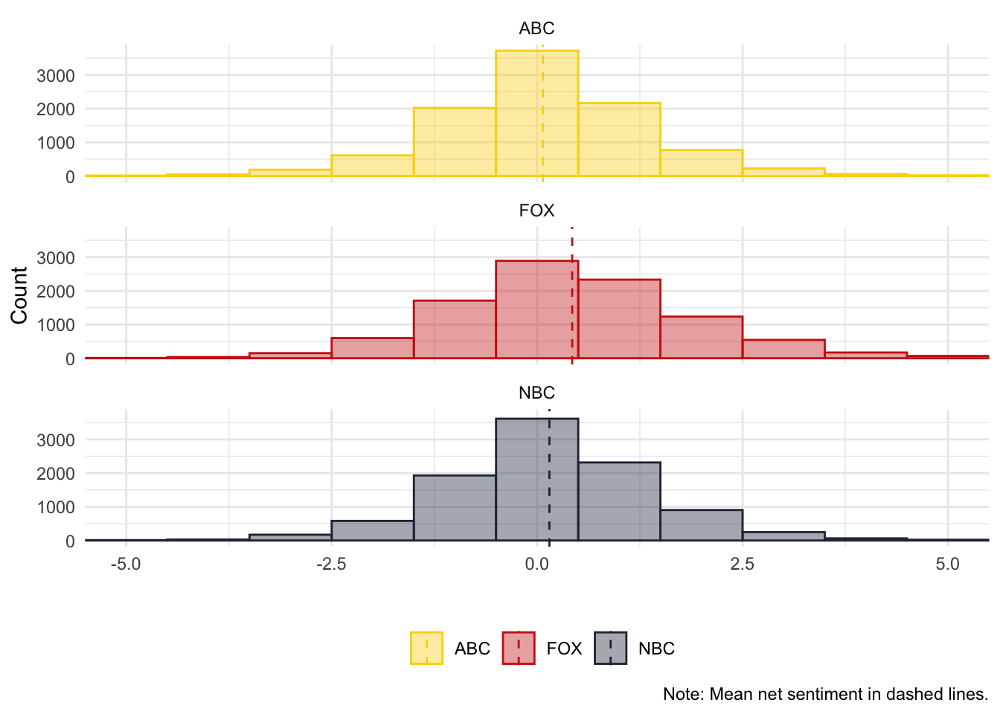
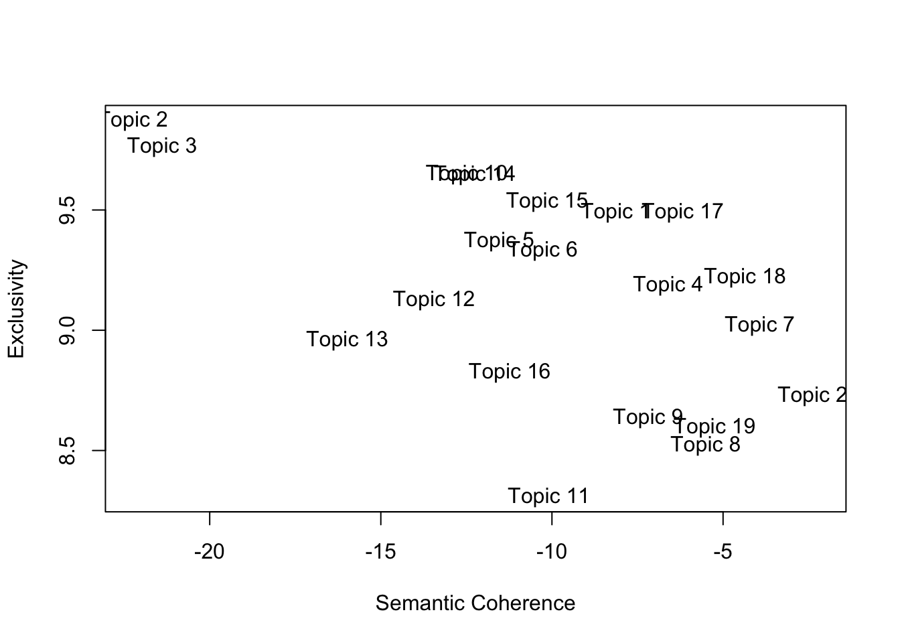
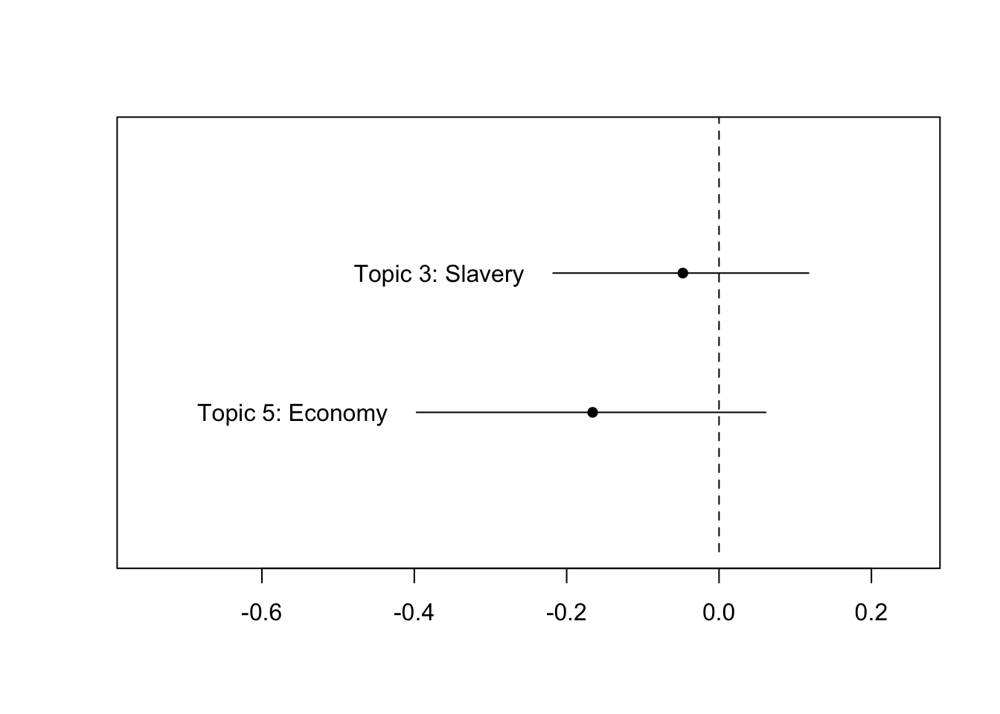

“Computational Text Analysis”
Welcome to the site for the course PS9594A: “Computational Text Analysis” at Western University, taught by Sebastián Vallejo Vera. In each week, you will find the code, exercises, and slides for the corresponding topic.
Before you start, check the required software and packages below. Also, don’t forget to read the Syllabus and check Perusall for the readings for the course. This site will be corrected/updated throughout the semester.
0.1 Software and Packages
For the first part of this course (Weeks 1 - 5), we will be mainly using R. For the second part of the this course (Weeks 6 - 11), we will use a combination of R and Python. I will assume that you are familiar with R language, RStudio, and R packages. If you are not, please come to office hours and I can help you out1. In R, these are the main packages you will need to have installed:
- tidyverse (we will be piping)
- tidylog (helps keep track of what your are pipins)
- tidytext (great for working with text)
- quanteda (stands for “Quantitative Analysis of Textual Data”)
- quanteda.textstats (to obtain stats from our dfm)
- quanteda.textplots (to obtain plots from our dfm stats)
- quanteda.dictionaries (to use dictionaries with quanteda)
- gutenbergr (to download texts from Project Gutenberg)
- wesanderson (to make things pretty)
- stm (to run Structural Topic Models)
0.2 Datasets
Throughout the class, we will be using a number of sample datasets. Access to these datasets will be provided directly on the code. For your Final Essay, you can use one of the following datasets (or, even better, you can use your own):
- Data from Ventura et al. (2021) - “Connective Effervescence and Streaming Chat During Political Debates”: Link to replication material
- Data from Project Gutenberg:
gutenbergr - Open-ended question from the 2021 Canadian Election Study survey: Link to replication material
- Open-ended questions from ANES surveys: Link to ANES homepage
0.3 Acknowledgments
The organization of the first part of this course (Weeks 1 - 5) and the format of the assignments are borrowed from Christopher Barrie’s excellent course on “Computational Text Analysis”, a syllabus from the prolific Tiago Ventura, and Grimmer, Roberts, and Stewart’s excellent book, “Text as data: A new framework for machine learning and the social sciences”. The code used throughout the course is a patchwork of my own code, but my own code borrows heavily from the internet (but that’s true for all code). I try my best to give credit to the original authors of the code (when and if possible).
1 Week 1: A Primer on Using Text as Data
Slides
1.1 Setup
For this first example, we will replicate (and extend) Mendenhall’s (1887) and Mendenhall’s (1901) studies of word-length distribution.

(#fig:curve)From Mendenhall (1987) - The Characteristic Curves of Composition.
First we load the packages that we’ll be using:
library(tidyverse) # for wrangling data
library(tidylog) # to know what we are wrangling
library(tidytext) # for 'tidy' manipulation of text data
library(wesanderson) # to prettify
library(gutenbergr) # to get some books
library(kableExtra) # for displaying data in html format (relevant for formatting this worksheet mainly)1.2 Get Data
Mendenhall (1887) argued that “every writer makes use of a vocabulary which is peculiar to himself, and the character of which does not materially change from year to year during his productive,” and that one of these characteristics was the length of words. Mendenhall (1901) takes this further, and suggests that, given this assumption, Shakespeare and Bacon were not the same person2.
Let’s get a corpus–a collection of documents–that we can analyze. We can search the Gutenberg repository and create a corpus with some selected work.
## # A tibble: 66 × 8
## gutenberg_id title author gutenberg_author_id language gutenberg_bookshelf
## <int> <chr> <chr> <int> <chr> <chr>
## 1 174 The Pic… Wilde… 111 en "Gothic Fiction/Mo…
## 2 301 The Bal… Wilde… 111 en ""
## 3 773 Lord Ar… Wilde… 111 en "Contemporary Revi…
## 4 774 Essays … Wilde… 111 en ""
## 5 790 Lady Wi… Wilde… 111 en ""
## 6 844 The Imp… Wilde… 111 en "Plays"
## 7 854 A Woman… Wilde… 111 en "Plays"
## 8 873 A House… Wilde… 111 en "Opera"
## 9 875 The Duc… Wilde… 111 en ""
## 10 885 An Idea… Wilde… 111 en "Plays"
## # ℹ 56 more rows
## # ℹ 2 more variables: rights <chr>, has_text <lgl>1.3 Word Length in Wilde’s Corpus
That’s a lot of Wilde! Let’s focus on four plays: “The Importance of Being Earnest”, “A Woman of No Importance”, “Lady Windermere’s Fan”, and “An Ideal Husband”. We can download all of these plays using their ID number:
wilde <- gutenberg_download(c(790,844, 854, 885),
meta_fields = c("title","author"))
print(n=25,wilde[c(51:75),])## # A tibble: 25 × 4
## gutenberg_id text title author
## <int> <chr> <chr> <chr>
## 1 790 "" Lady Winderm… Wilde…
## 2 790 "" Lady Winderm… Wilde…
## 3 790 "THE PERSONS OF THE PLAY" Lady Winderm… Wilde…
## 4 790 "" Lady Winderm… Wilde…
## 5 790 "" Lady Winderm… Wilde…
## 6 790 "Lord Windermere" Lady Winderm… Wilde…
## 7 790 "" Lady Winderm… Wilde…
## 8 790 "Lord Darlington" Lady Winderm… Wilde…
## 9 790 "" Lady Winderm… Wilde…
## 10 790 "Lord Augustus Lorton" Lady Winderm… Wilde…
## 11 790 "" Lady Winderm… Wilde…
## 12 790 "Mr. Dumby" Lady Winderm… Wilde…
## 13 790 "" Lady Winderm… Wilde…
## 14 790 "Mr. Cecil Graham" Lady Winderm… Wilde…
## 15 790 "" Lady Winderm… Wilde…
## 16 790 "Mr. Hopper" Lady Winderm… Wilde…
## 17 790 "" Lady Winderm… Wilde…
## 18 790 "Parker, Butler" Lady Winderm… Wilde…
## 19 790 "" Lady Winderm… Wilde…
## 20 790 " * * * * *" Lady Winderm… Wilde…
## 21 790 "" Lady Winderm… Wilde…
## 22 790 "Lady Windermere" Lady Winderm… Wilde…
## 23 790 "" Lady Winderm… Wilde…
## 24 790 "The Duchess of Berwick" Lady Winderm… Wilde…
## 25 790 "" Lady Winderm… Wilde…The unit of analysis is something like a line. We are interested in each word—also known as token—and their lengths in each play. We will clean some of the unwanted text—text that will only add noise to our analysis—and then count the number of words.
wilde <- wilde %>%
# Some housekeeping
mutate(title = ifelse(str_detect(title,"Importance of Being"),"The Importance of Being Earnest", title)) %>%
# Filter out all empty rows
filter(text != "") %>%
# This is a play. The name of each character before they speak
filter(str_detect(text,"[A-Z]{3,}")==FALSE)## mutate: changed 3,884 values (27%) of 'title' (0 new NA)## filter: removed 4,232 rows (29%), 10,303 rows remaining## filter: removed 4,208 rows (41%), 6,095 rows remaining## # A tibble: 25 × 4
## gutenberg_id text title author
## <int> <chr> <chr> <chr>
## 1 790 "tea-table L._ _Window opening on to terrace L._ … Lady… Wilde…
## 2 790 "home to any one who calls." Lady… Wilde…
## 3 790 " … Lady… Wilde…
## 4 790 "he’s come." Lady… Wilde…
## 5 790 "hands with you. My hands are all wet with these … Lady… Wilde…
## 6 790 "lovely? They came up from Selby this morning." Lady… Wilde…
## 7 790 "table_.] And what a wonderful fan! May I look a… Lady… Wilde…
## 8 790 "everything. I have only just seen it myself. It… Lady… Wilde…
## 9 790 "present to me. You know to-day is my birthday?" Lady… Wilde…
## 10 790 "life, isn’t it? That is why I am giving this par… Lady… Wilde…
## 11 790 "down. [_Still arranging flowers_.]" Lady… Wilde…
## 12 790 "birthday, Lady Windermere. I would have covered … Lady… Wilde…
## 13 790 "front of your house with flowers for you to walk … Lady… Wilde…
## 14 790 "you." Lady… Wilde…
## 15 790 " … Lady… Wilde…
## 16 790 "Foreign Office. I am afraid you are going to ann… Lady… Wilde…
## 17 790 "with her pocket-handkerchief_, _goes to tea-table… Lady… Wilde…
## 18 790 "Won’t you come over, Lord Darlington?" Lady… Wilde…
## 19 790 "miserable, Lady Windermere. You must tell me wha… Lady… Wilde…
## 20 790 "table L._]" Lady… Wilde…
## 21 790 "whole evening." Lady… Wilde…
## 22 790 "that the only pleasant things to pay _are_ compli… Lady… Wilde…
## 23 790 "things we _can_ pay." Lady… Wilde…
## 24 790 "You mustn’t laugh, I am quite serious. I don’t l… Lady… Wilde…
## 25 790 "don’t see why a man should think he is pleasing a… Lady… Wilde…Now, we can change our unit of analysis to the token:
wilde_words <- wilde %>%
# take the column text and divide it by words
unnest_tokens(word, text) %>%
# Remove some characters that add noise
mutate(word = str_remove_all(word, "\\_")) ## mutate: changed 1,225 values (2%) of 'word' (0 new NA)## # A tibble: 60,465 × 4
## gutenberg_id title author word
## <int> <chr> <chr> <chr>
## 1 790 Lady Windermere's Fan Wilde, Oscar by
## 2 790 Lady Windermere's Fan Wilde, Oscar sixteenth
## 3 790 Lady Windermere's Fan Wilde, Oscar edition
## 4 790 Lady Windermere's Fan Wilde, Oscar first
## 5 790 Lady Windermere's Fan Wilde, Oscar published
## 6 790 Lady Windermere's Fan Wilde, Oscar 1893
## 7 790 Lady Windermere's Fan Wilde, Oscar first
## 8 790 Lady Windermere's Fan Wilde, Oscar issued
## 9 790 Lady Windermere's Fan Wilde, Oscar by
## 10 790 Lady Windermere's Fan Wilde, Oscar methuen
## # ℹ 60,455 more rowsThat’s a lot of words! We will now create a column for word length, and then count the number of words by length (by play!).
wilde_words_ct <- wilde_words %>%
# Length of each word
mutate(word_length = str_length(word)) %>%
# Group by word_length and count how many
group_by(word_length,title) %>%
mutate(total_word_length = n()) %>%
# Keep relevant
distinct(word_length,title,.keep_all=T) %>%
select(word_length,title,author,total_word_length)## mutate: new variable 'word_length' (integer) with 17 unique values and 0% NA## group_by: 2 grouping variables (word_length, title)## mutate (grouped): new variable 'total_word_length' (integer) with 58 unique values and 0% NA## distinct (grouped): removed 60,403 rows (>99%), 62 rows remaining## select: dropped 2 variables (gutenberg_id, word)Let’s see the distribution by play:
wilde_words_ct %>%
ggplot(aes(y=total_word_length,x=word_length,color=title)) +
geom_point(alpha=0.8) +
geom_line(alpha=0.8) +
scale_color_manual(values = wes_palette("Royal2")) +
theme_minimal() +
theme(legend.position = "right") +
labs(x="Length", y = "Total Number of Words", color = "")
This is a problem. Why?
Here is a solution (proposed by Mendenhall):
wilde_words %>%
group_by(title) %>%
slice_sample(n=10000) %>%
mutate(word_length = str_length(word),
median_word_length = median(word_length)) %>%
group_by(word_length,title) %>%
mutate(total_word_length = n()) %>%
distinct(word_length,title,.keep_all=T) %>%
select(word_length,title,author,total_word_length,median_word_length) %>%
ggplot(aes(y=total_word_length,x=word_length,color=title)) +
geom_point(alpha=0.8) +
geom_line(alpha=0.8) +
geom_vline(aes(xintercept = median_word_length,color=title,linetype = title))+
scale_color_manual(values = wes_palette("Royal2")) +
theme_minimal() +
theme(legend.position = "right") +
labs(x="Length", y = "Total Number of Words", color = "", linetype = "",
caption = "Note: Line type shows median word length.")## group_by: one grouping variable (title)## slice_sample (grouped): removed 20,465 rows (34%), 40,000 rows remaining## mutate (grouped): new variable 'word_length' (integer) with 17 unique values and 0% NA## new variable 'median_word_length' (double) with one unique value and 0% NA## group_by: 2 grouping variables (word_length, title)## mutate (grouped): new variable 'total_word_length' (integer) with 56 unique values and 0% NA## distinct (grouped): removed 39,940 rows (>99%), 60 rows remaining## select: dropped 2 variables (gutenberg_id, word)
Would you look at that. Mendenhall was into something: an author has a mark in terms of word length distribution. For Wilde, there is no observable change across time (each play was published in different years). But, what happens when we compare Wilde’s mark with Shakespeare’s? Let’s choose four plays (at random) by Shakespeare: A Midsummer Night’s Dream, The Merchant of Venice, Much Ado about Nothing, and The Tempest.
1.4 Comparing Shakespeare and Wilde
shakes <- gutenberg_download(c(1520,2242,2243,2235),
meta_fields = c("title","author"))
print(n=25,shakes[c(51:75),])## # A tibble: 25 × 4
## gutenberg_id text title author
## <int> <chr> <chr> <chr>
## 1 1520 "Leon." Much… Shake…
## 2 1520 "How many gentlemen have you lost in this action?" Much… Shake…
## 3 1520 "" Much… Shake…
## 4 1520 "Mess." Much… Shake…
## 5 1520 "But few of any sort, and none of name." Much… Shake…
## 6 1520 "" Much… Shake…
## 7 1520 "Leon." Much… Shake…
## 8 1520 "A victory is twice itself when the achiever bring… Much… Shake…
## 9 1520 "numbers. I find here that Don Pedro hath bestowe… Much… Shake…
## 10 1520 "a young Florentine, called Claudio." Much… Shake…
## 11 1520 "" Much… Shake…
## 12 1520 "Mess." Much… Shake…
## 13 1520 "Much deserved on his part, and equally remembered… Much… Shake…
## 14 1520 "He hath borne himself beyond the promise of his a… Much… Shake…
## 15 1520 "in the figure of a lamb, the feats of a lion: he … Much… Shake…
## 16 1520 "better bettered expectation than you must expect … Much… Shake…
## 17 1520 "you how." Much… Shake…
## 18 1520 "" Much… Shake…
## 19 1520 "Leon." Much… Shake…
## 20 1520 "He hath an uncle here in Messina will be very muc… Much… Shake…
## 21 1520 "" Much… Shake…
## 22 1520 "Mess." Much… Shake…
## 23 1520 "I have already delivered him letters, and there a… Much… Shake…
## 24 1520 "joy in him; even so much that joy could not show … Much… Shake…
## 25 1520 "enough without a badge of bitterness." Much… Shake…This text is cleaner than Wilde’s corpus, so we will leave it as is. Also, it is harder to systematically remove the name of the person speaking. Is this a problem? Why? Why not?
We can put together both corpora and see differences in the distributions of word length.
shakes_words <- shakes %>%
# Filter out all empty rows
filter(text != "") %>%
# This is a play. The name of each character before they speak
filter(str_detect(text,"[A-Z]{3,}")==FALSE) %>%
# take the column text and divide it by words
unnest_tokens(word, text) ## filter: removed 3,088 rows (22%), 11,135 rows remaining## filter: removed 31 rows (<1%), 11,104 rows remaining# Bind both word dfs
words <- rbind.data.frame(shakes_words,wilde_words)
# Count words etc.
words %>%
group_by(title,author) %>%
slice_sample(n=10000) %>%
mutate(word_length = str_length(word),
median_word_length = median(word_length)) %>%
group_by(word_length,title,author) %>%
mutate(total_word_length = n()) %>%
distinct(word_length,title,.keep_all=T) %>%
select(word_length,title,author,total_word_length,median_word_length) %>%
ggplot(aes(y=total_word_length,x=word_length,color=author,group=title)) +
geom_point(alpha=0.8) +
geom_line(alpha=0.8) +
scale_color_manual(values = wes_palette("Royal2")) +
# facet_wrap(~author, ncol = 2)+
theme_minimal() +
theme(legend.position = "bottom") +
labs(x="Length", y = "Total Number of Words", color = "", linetype = "",
caption = "Note: Median word length is 4 for both authors.")## group_by: 2 grouping variables (title, author)## slice_sample (grouped): removed 61,480 rows (43%), 80,000 rows remaining## mutate (grouped): new variable 'word_length' (integer) with 17 unique values and 0% NA## new variable 'median_word_length' (double) with one unique value and 0% NA## group_by: 3 grouping variables (word_length, title, author)## mutate (grouped): new variable 'total_word_length' (integer) with 102 unique values and 0% NA## distinct (grouped): removed 79,884 rows (>99%), 116 rows remaining## select: dropped 2 variables (gutenberg_id, word)
Are there any differences? What can we conclude from the evidence? What are the limitations of this approach? Are there alternative approaches to study what Mendenhall was getting at?
1.5 Exercise (Optional)
- Extend the current analysis to other authors or to more works from the same author.
- Are there better ways to compare the distribution of word length? Are there changes across time? Are there differences between different types of works (e.g., fiction vs. non-fiction, prose vs. poetry)?
1.6 Final Words
As will be often the case, we won’t be able to cover every single feature that the different packages have to offer, or how some objects that we create look like, or what else we can do with them. My advise is that you go home and explore the code in detail. Try applying the code to a different corpus and come next class with questions (or just show off what you were able to do).
2 Week 2: Tokenization and Word Frequency
Slides
- 3 Tokenization and Word Frequency (link or in Perusall)
2.1 Setup
As always, we first load the packages that we’ll be using:
library(tidyverse) # for wrangling data
library(tidylog) # to know what we are wrangling
library(tidytext) # for 'tidy' manipulation of text data
library(quanteda) # tokenization power house
library(quanteda.textstats)
library(quanteda.textplots)
library(wesanderson) # to prettify
library(readxl) # to read excel
library(kableExtra) # for displaying data in html format (relevant for formatting this worksheet mainly)2.2 Get Data:
For this example, we will be using small corpus of song lyrics.
## # A tibble: 6 × 5
## artist album year song lyrics
## <chr> <chr> <dbl> <chr> <chr>
## 1 Rage Against the Machine Evil Empire 1996 Bulls on Para… "Come…
## 2 Rage Against the Machine Rage Against the Machine 1992 Killing in th… "Kill…
## 3 Rage Against the Machine Renegades 2000 Renegades of … "No m…
## 4 Rage Against the Machine The Battle of Los Angeles 1999 Sleep Now in … "Yeah…
## 5 Rage Against the Machine The Battle of Los Angeles 1999 Guerrilla Rad… "Tran…
## 6 Rage Against the Machine The Battle of Los Angeles 1999 Testify "Uh!\…Ok, so we have different artists, from different genres and year…
##
## Megan Thee Stallion Rage Against the Machine System of a Down
## 5 6 5
## Taylor Swift
## 5And we have the lyrics in the following form:
## [1] "Yeah\r\n\r\nThe world is my expense\r\nIt’s the cost of my desire\r\nJesus blessed me with its future\r\nAnd I protect it with fire\r\n\r\nSo raise your fists and march around\r\nJust don’t take what you need\r\nI’ll jail and bury those committed\r\nAnd smother the rest in greed\r\n\r\nCrawl with me into tomorrow\r\nOr I’ll drag you to your grave\r\nI’m deep inside your children\r\nThey’ll betray you in my name\r\n\r\nHey, hey, sleep now in the fire\r\nHey, hey, sleep now in the fire\r\n\r\nThe lie is my expense\r\nThe scope of my desire\r\nThe party blessed me with its future\r\nAnd I protect it with fire\r\n\r\nI am the Niña, the Pinta, the Santa María\r\nThe noose and the rapist, the fields overseer\r\nThe Agents of Orange, the Priests of Hiroshima\r\nThe cost of my desire, sleep now in the fire\r\n\r\nHey, hey, sleep now in the fire\r\nHey, hey, sleep now in the fire\r\n\r\nFor it’s the end of history\r\nIt’s caged and frozen still\r\nThere is no other pill to take\r\nSo swallow the one that made you ill\r\n\r\nThe Niña, the Pinta, the Santa María\r\nThe noose and the rapist, the fields overseer\r\nThe Agents of Orange, the Priests of Hiroshima\r\nThe cost of my desire to sleep now in the fire\r\n\r\nYeah\r\n\r\nSleep now in the fire\r\nSleep now in the fire\r\nSleep now in the fire\r\nSleep now in the fire"2.3 Cleaning the Text
Much like music, text comes in different forms and qualities. From the Regex workshop, you might remember that there are special characters that can signal, for example, a new line (\n), or carriage return (\r). For this example, we can get rid of them 3. Before working with text, always check the state of your documents once loaded into your program of choice.
sample_lyrics <- sample_lyrics %>%
mutate(lyrics_clean = str_replace_all(lyrics,"\\n", "\\."),
lyrics_clean = str_replace_all(lyrics_clean,"\\r", "\\.")) %>%
select(-lyrics)## mutate: new variable 'lyrics_clean' (character) with 21 unique values and 0% NA## select: dropped one variable (lyrics)## [1] "Yeah....The world is my expense..It’s the cost of my desire..Jesus blessed me with its future..And I protect it with fire....So raise your fists and march around..Just don’t take what you need..I’ll jail and bury those committed..And smother the rest in greed....Crawl with me into tomorrow..Or I’ll drag you to your grave..I’m deep inside your children..They’ll betray you in my name....Hey, hey, sleep now in the fire..Hey, hey, sleep now in the fire....The lie is my expense..The scope of my desire..The party blessed me with its future..And I protect it with fire....I am the Niña, the Pinta, the Santa María..The noose and the rapist, the fields overseer..The Agents of Orange, the Priests of Hiroshima..The cost of my desire, sleep now in the fire....Hey, hey, sleep now in the fire..Hey, hey, sleep now in the fire....For it’s the end of history..It’s caged and frozen still..There is no other pill to take..So swallow the one that made you ill....The Niña, the Pinta, the Santa María..The noose and the rapist, the fields overseer..The Agents of Orange, the Priests of Hiroshima..The cost of my desire to sleep now in the fire....Yeah....Sleep now in the fire..Sleep now in the fire..Sleep now in the fire..Sleep now in the fire"2.4 Tokenization
Our goal is to create a document-feature matrix, from which we will later extract information about word frequency. To do that, we start by crating a corpus object, from the quanteda package.
corpus_lyrics <- corpus(sample_lyrics,
text_field = "lyrics_clean",
unique_docnames = TRUE)
summary(corpus_lyrics)## Corpus consisting of 21 documents, showing 21 documents:
##
## Text Types Tokens Sentences artist
## text1 119 375 35 Rage Against the Machine
## text2 52 853 83 Rage Against the Machine
## text3 188 835 91 Rage Against the Machine
## text4 97 352 38 Rage Against the Machine
## text5 160 440 50 Rage Against the Machine
## text6 133 535 67 Rage Against the Machine
## text7 104 559 53 System of a Down
## text8 67 365 40 System of a Down
## text9 68 298 33 System of a Down
## text10 65 258 32 System of a Down
## text11 137 558 68 System of a Down
## text12 131 876 70 Taylor Swift
## text13 159 465 41 Taylor Swift
## text14 162 544 62 Taylor Swift
## text15 196 738 84 Taylor Swift
## text16 169 549 50 Taylor Swift
## text17 229 867 55 Megan Thee Stallion
## text18 193 664 61 Megan Thee Stallion
## text19 310 1190 87 Megan Thee Stallion
## text20 198 656 48 Megan Thee Stallion
## text21 256 1050 73 Megan Thee Stallion
## album year song
## Evil Empire 1996 Bulls on Parade
## Rage Against the Machine 1992 Killing in the Name
## Renegades 2000 Renegades of Funk
## The Battle of Los Angeles 1999 Sleep Now in the Fire
## The Battle of Los Angeles 1999 Guerrilla Radio
## The Battle of Los Angeles 1999 Testify
## Mezmerize 2005 B.Y.O.B
## Toxicity 2001 Chop Suey!
## Toxicity 2001 Aerials
## Toxicity 2001 Toxicty
## Toxicity 2001 Sugar
## 1989 2014 Shake it Off
## Midnights 2022 Anti-Hero
## Fearless 2008 You Belong With Me
## 1989 2014 Blank Space
## Fearless 2008 Love Story
## Traumazine 2022 Plan B
## Suga 2020 Savage
## Something for Thee Hotties 2021 Thot Shit
## Traumazine 2022 Her
## Traumazine 2022 UngratefulLooks good. Now we can tokenize our corpus (and reduce complexity). One benefit of creating a corpus object first is that we maintain all the metadata for every document when we tokenize. This will come in handy in the future.
lyrics_toks <- tokens(corpus_lyrics,
remove_numbers = TRUE, # Thinks about this
remove_punct = TRUE, # Remove punctuation!
remove_url = TRUE) # Might be helpful
lyrics_toks[c(4,14)]## Tokens consisting of 2 documents and 4 docvars.
## text4 :
## [1] "Yeah" "The" "world" "is" "my" "expense" "It’s"
## [8] "the" "cost" "of" "my" "desire"
## [ ... and 227 more ]
##
## text14 :
## [1] "You're" "on" "the" "phone" "with"
## [6] "your" "girlfriend" "she's" "upset" "She's"
## [11] "going" "off"
## [ ... and 385 more ]We got rid of the punctuation. Now let’s remove stop words, high and low frequency words, and stem the remaining tokens. Here I am cheating, though. I know that high and low frequency words because I checked my dfm (see next code chunk).
lyrics_toks <- tokens_remove(lyrics_toks,
# you can change or add stopwords depending on the
# language(s) of the documents
c(stopwords(language = "en"),
# Now is high frequency... there are many low
# frequency tokens. We will check these later
"now"),
padding = F)
lyrics_toks_stem <- tokens_wordstem(lyrics_toks, language = "en")
lyrics_toks[c(4,14)]## Tokens consisting of 2 documents and 4 docvars.
## text4 :
## [1] "Yeah" "world" "expense" "It’s" "cost" "desire" "Jesus"
## [8] "blessed" "future" "protect" "fire" "raise"
## [ ... and 105 more ]
##
## text14 :
## [1] "phone" "girlfriend" "upset" "going" "something"
## [6] "said" "Cause" "get" "humor" "like"
## [11] "room" "typical"
## [ ... and 133 more ]## Tokens consisting of 2 documents and 4 docvars.
## text4 :
## [1] "Yeah" "world" "expens" "It’s" "cost" "desir" "Jesus"
## [8] "bless" "futur" "protect" "fire" "rais"
## [ ... and 105 more ]
##
## text14 :
## [1] "phone" "girlfriend" "upset" "go" "someth"
## [6] "said" "Caus" "get" "humor" "like"
## [11] "room" "typic"
## [ ... and 133 more ]We can compare the stemmed output and the non-stemmed output. Why did ‘future’ become ‘futur’? Because we are assuming that, for our purposes, ‘future=futuristic’. This is for the researcher to decide. And finally, we can create our document-feature matrix (dfm).
## Document-feature matrix of: 6 documents, 1,165 features (93.12% sparse) and 4 docvars.
## features
## docs come wit microphon explod shatter mold either drop hit like
## text1 4 4 1 1 1 1 1 3 1 1
## text2 2 0 0 0 0 0 0 0 0 0
## text3 0 0 0 0 0 0 0 0 0 4
## text4 0 0 0 0 0 0 0 0 0 0
## text5 0 0 0 0 0 0 0 0 0 1
## text6 0 4 0 0 0 0 0 0 0 0
## [ reached max_nfeat ... 1,155 more features ]Note that once we create the dfm object, all the tokens become lowercase. Now we can check what are the 15 most frequent tokens.
lyrics_dfm_stem %>%
textstat_frequency(n=30) %>%
ggplot(aes(x = reorder(feature,frequency),y=frequency,fill = (frequency), color = (frequency))) +
geom_col(alpha=0.5) +
coord_flip() +
scale_x_reordered() +
scale_color_distiller(palette = "PuOr") +
scale_fill_distiller(palette = "PuOr") +
theme_minimal() +
labs(x="",y="Frequency",color = "", fill = "") +
theme(legend.position="none") 
Does not tell us much, but I used the previous code to check for low-information tokens that I might want to remove from my analysis. We can also see how many tokens appear only once:
## filter: removed 566 rows (49%), 599 rows remaining## [1] 599More interesting for text analysis is to count words over time/space. In this case, our ‘space’ can be the artist.
lyrics_dfm_stem %>%
textstat_frequency(n=15, groups = c(artist)) %>%
ggplot(aes(x = reorder_within(feature,frequency,group),y=frequency,fill = group, color = group)) +
geom_col(alpha = 0.5) +
coord_flip() +
facet_wrap(~group, scales = "free") +
scale_x_reordered() +
scale_color_brewer(palette = "PuOr") +
scale_fill_brewer(palette = "PuOr") +
theme_minimal() +
labs(x="",y="",color = "", fill = "") +
theme(legend.position="none") 
Interesting. Not a lot of overlap (apart from a token from Megan Thee Stallion and Rage Against the Machine). However, it would be great if we could measure the importance of a word relative to how much it appears across documents (one way to denominate). Enter TF-IDF: “Term-Frequency / Inverse-Document-frequency”. TF-IDF weighting up-weights relatively rare words that do not appear in all documents. Using term frequency and inverse document frequency allows us to find words that are characteristic for one document within a collection of documents.
lyrics_dfm_tfidf <- dfm_tfidf(lyrics_dfm_stem)
lyrics_dfm_tfidf %>%
textstat_frequency(n=15, groups = c(artist), force=T) %>%
ggplot(aes(x = reorder_within(feature,frequency,group),y=frequency,fill = group, color = group)) +
geom_col(alpha = 0.5) +
coord_flip() +
facet_wrap(~group, scales = "free") +
scale_x_reordered() +
scale_color_brewer(palette = "PuOr") +
scale_fill_brewer(palette = "PuOr") +
theme_minimal() +
labs(x="",y="TF-IDF",color = "", fill = "") +
theme(legend.position="none") If we are building a dictionary, for example, we might want to include words with high TF-IDF values. Another way to think about TF-IDF is in terms of predictive power. Words that are common to all documents do not have any predictive power and receive a TD-IDF value of 0. Words that appear, but only in relatively few document, have greater predictive power and receive a TD-IDF > 0. Very rare words are also penalized, since these might provide only specific information about one document (i.e., high prediction for one document but no information about the rest). As you will read in Chapter 6/7 in Grimmer et al., the idea is to find the right balance.
Another useful tool (and concept) is keyness. Keyness is a two-by-two association score for features that occur differentially across different categories. We can estimate which features are associated more with one category (in this case, one artist), compared to the other. Let’s compare Megan Thee Stallion and Taylor Swift.
lyrics_dfm_ts_mts <- dfm_subset(lyrics_dfm_stem, year > 2006)
lyrics_key <- textstat_keyness(lyrics_dfm_ts_mts,
target = lyrics_dfm_ts_mts$artist == "Taylor Swift")
textplot_keyness(lyrics_key)
Similar to what we would have implied from the TF-IDF graphs. Notice that stemming does not always works are expected. Taylor Swift sings about “shake, shake, shake” and Megan Thee Stallion sings about “shaking”. However, both words appear as distinct features from both artists.
2.5 Word Frequency Across Artist
We can do something similar to what we did last week to look at word frequencies. Rather than creating a dfm, we can use the dataset as is, and get some information. For example, the average number of tokens by artist.
sample_lyrics %>%
# take the column lyrics_clean and divide it by words
# this uses a similar tokenizer to quanteda
unnest_tokens(word, lyrics_clean) %>%
group_by(song) %>%
mutate(total_tk_song = n()) %>%
distinct(song,.keep_all=T) %>%
group_by(artist) %>%
mutate(mean_tokens = mean(total_tk_song)) %>%
ggplot(aes(x=song,y=total_tk_song,fill=artist,color=artist)) +
geom_col(alpha=.8) +
geom_hline(aes(yintercept = mean_tokens, color = artist), linetype = "dashed")+
scale_color_manual(values = wes_palette("Royal2")) +
scale_fill_manual(values = wes_palette("Royal2")) +
facet_wrap(~artist, scales = "free_x", nrow = 1) +
theme_minimal() +
theme(legend.position="none",
axis.text.x = element_text(angle = 90, size = 5,vjust = 0.5, hjust=1)) +
labs(x="", y = "Total Tokens", color = "", fill = "",
caption = "Note: Mean token length in dashed line.")## group_by: one grouping variable (song)## mutate (grouped): new variable 'total_tk_song' (integer) with 20 unique values and 0% NA## distinct (grouped): removed 8,958 rows (>99%), 21 rows remaining## group_by: one grouping variable (artist)## mutate (grouped): new variable 'mean_tokens' (double) with 4 unique values and 0% NAAlternatively, we can estimate the frequency of a specific token by song.
lyrics_totals <- sample_lyrics %>%
# take the column lyrics_clean and divide it by words
# this uses a similar tokenizer to quanteda
unnest_tokens(word, lyrics_clean) %>%
group_by(song) %>%
mutate(total_tk_song = n()) %>%
distinct(song,.keep_all=T) ## group_by: one grouping variable (song)## mutate (grouped): new variable 'total_tk_song' (integer) with 20 unique values and 0% NA## distinct (grouped): removed 8,958 rows (>99%), 21 rows remaining# let's look for "like"
lyrics_like <- sample_lyrics %>%
# take the column lyrics_clean and divide it by words
# this uses a similar tokenizer to quanteda
unnest_tokens(word, lyrics_clean) %>%
filter(word=="like") %>%
group_by(song) %>%
mutate(total_like_song = n()) %>%
distinct(song,total_like_song) ## filter: removed 8,934 rows (99%), 45 rows remaining## group_by: one grouping variable (song)## mutate (grouped): new variable 'total_like_song' (integer) with 7 unique values and 0% NA## distinct (grouped): removed 33 rows (73%), 12 rows remainingWe can now join these two data frames together with the left_join() function and join by the “song” column. We can then pipe the joined data into a plot.
lyrics_totals %>%
left_join(lyrics_like, by = "song") %>%
ungroup() %>%
mutate(like_prop = total_like_song/total_tk_song) %>%
ggplot(aes(x=song,y=like_prop,fill=artist,color=artist)) +
geom_col(alpha=.8) +
scale_color_manual(values = wes_palette("Royal2")) +
scale_fill_manual(values = wes_palette("Royal2")) +
facet_wrap(~artist, scales = "free_x", nrow = 1) +
theme_minimal() +
theme(legend.position="none",
axis.text.x = element_text(angle = 90, size = 5,vjust = 0.5, hjust=1)) +
labs(x="", y = "Prop. of \'Like\'", color = "", fill = "")## left_join: added one column (total_like_song)## > rows only in x 9## > rows only in y ( 0)## > matched rows 12## > ====## > rows total 21## ungroup: no grouping variables## mutate: new variable 'like_prop' (double) with 13 unique values and 43% NA2.6 Final Words
As will be often the case, we won’t be able to cover every single feature that the different packages have to offer, or how some objects that we create look like, or what else we can do with them. My advise is that you go home and explore the code in detail. Try applying the code to a different corpus and come next class with questions (or just show off what you were able to do).
3 Week 3: Dictionary-Based Approaches
Slides
- 4 Dictionary-Based Approaches (link or in Perusall)
3.1 Setup
As always, we first load the packages that we’ll be using:
library(tidyverse) # for wrangling data
library(tidylog) # to know what we are wrangling
library(tidytext) # for 'tidy' manipulation of text data
library(textdata) # text datasets
library(quanteda) # tokenization power house
library(quanteda.textstats)
library(quanteda.dictionaries)
library(wesanderson) # to prettify
library(knitr) # for displaying data in html format (relevant for formatting this worksheet mainly)3.2 Get Data:
For this example, we will be using data from Ventura et al. (2021) - Connective effervescence and streaming chat during political debates.
## text_id
## 1 1
## 2 2
## 3 3
## 4 4
## 5 5
## 6 6
## comments
## 1 MORE:\n The coronavirus pandemic's impact on the race will be on display as the\n two candidates won't partake in a handshake, customary at the top of \nsuch events. The size of the audience will also be limited. https://abcn.ws/3kVyl16
## 2 God please bless all Trump supporters. They need it for they know not what they do
## 3 Trump is a living disaster! What an embarrassment to all human beings! The man is dangerous!
## 4 This debate is why other counties laugh at us. School yard class president debate at best.
## 5 OMG\n ... shut up tRump ... so rude and out of control. Obviously freaking \nout. This is a debate NOT a convention or a speech or your platform. \nLearn some manners
## 6 It’s\n hard to see what this country has become. The Presidency is no longer a\n respected position it has lost all of it’s integrity.
## id likes debate
## 1 ABC News 100 abc_first_debate_manual
## 2 Anita Hill 61 abc_first_debate_manual
## 3 Dave Garland 99 abc_first_debate_manual
## 4 Carl Roy 47 abc_first_debate_manual
## 5 Lynda Martin-Chambers 154 abc_first_debate_manual
## 6 Nica Merchant 171 abc_first_debate_manual3.3 Tokenization etc.
The comments are mostly clean, but you can check (on your own) if they require more cleaning. In the previous code, I showed you how to lower, remove stopwords, etc., using quanteda. We can also do this using tidytext 4:
tidy_ventura <- ventura_etal_df %>%
# to lower:
mutate(comments = tolower(comments)) %>%
# tokenize
unnest_tokens(word, comments) %>%
# keep only words (check regex)
filter(str_detect(word, "[a-z]")) %>%
# remove stop words
filter(!word %in% stop_words$word)## mutate: changed 29,261 values (99%) of 'comments' (0 new NA)## filter: removed 3,374 rows (1%), 494,341 rows remaining## filter: removed 296,793 rows (60%), 197,548 rows remaining## text_id id likes debate word
## 1 1 ABC News 100 abc_first_debate_manual coronavirus
## 2 1 ABC News 100 abc_first_debate_manual pandemic's
## 3 1 ABC News 100 abc_first_debate_manual impact
## 4 1 ABC News 100 abc_first_debate_manual race
## 5 1 ABC News 100 abc_first_debate_manual display
## 6 1 ABC News 100 abc_first_debate_manual candidates
## 7 1 ABC News 100 abc_first_debate_manual partake
## 8 1 ABC News 100 abc_first_debate_manual handshake
## 9 1 ABC News 100 abc_first_debate_manual customary
## 10 1 ABC News 100 abc_first_debate_manual top
## 11 1 ABC News 100 abc_first_debate_manual events
## 12 1 ABC News 100 abc_first_debate_manual size
## 13 1 ABC News 100 abc_first_debate_manual audience
## 14 1 ABC News 100 abc_first_debate_manual limited
## 15 1 ABC News 100 abc_first_debate_manual https
## 16 1 ABC News 100 abc_first_debate_manual abcn.ws
## 17 1 ABC News 100 abc_first_debate_manual 3kvyl16
## 18 2 Anita Hill 61 abc_first_debate_manual god
## 19 2 Anita Hill 61 abc_first_debate_manual bless
## 20 2 Anita Hill 61 abc_first_debate_manual trump3.4 Keywords
We can detect the occurrence of the words trump and biden in each comment (text_id).
trump_biden <- tidy_ventura %>%
# create a dummy
mutate(trump_token = ifelse(word=="trump", 1, 0),
biden_token = ifelse(word=="biden", 1, 0)) %>%
# see which comments have the word trump / biden
group_by(text_id) %>%
mutate(trump_cmmnt = ifelse(sum(trump_token)>0, 1, 0),
biden_cmmnt = ifelse(sum(biden_token)>0, 1, 0)) %>%
# reduce to our unit of analysis (comment)
distinct(text_id, .keep_all = T) %>%
select(text_id,trump_cmmnt,biden_cmmnt,likes,debate)## mutate: new variable 'trump_token' (double) with 2 unique values and 0% NA## new variable 'biden_token' (double) with 2 unique values and 0% NA## group_by: one grouping variable (text_id)## mutate (grouped): new variable 'trump_cmmnt' (double) with 2 unique values and 0% NA## new variable 'biden_cmmnt' (double) with 2 unique values and 0% NA## distinct (grouped): removed 168,013 rows (85%), 29,535 rows remaining## select: dropped 4 variables (id, word, trump_token, biden_token)## # A tibble: 20 × 5
## # Groups: text_id [20]
## text_id trump_cmmnt biden_cmmnt likes debate
## <int> <dbl> <dbl> <int> <chr>
## 1 1 0 0 100 abc_first_debate_manual
## 2 2 1 0 61 abc_first_debate_manual
## 3 3 1 0 99 abc_first_debate_manual
## 4 4 0 0 47 abc_first_debate_manual
## 5 5 1 0 154 abc_first_debate_manual
## 6 6 0 0 171 abc_first_debate_manual
## 7 7 0 0 79 abc_first_debate_manual
## 8 8 0 0 39 abc_first_debate_manual
## 9 9 0 0 53 abc_first_debate_manual
## 10 10 0 0 36 abc_first_debate_manual
## 11 11 1 0 41 abc_first_debate_manual
## 12 12 0 0 28 abc_first_debate_manual
## 13 13 1 0 54 abc_first_debate_manual
## 14 14 0 0 30 abc_first_debate_manual
## 15 15 1 0 27 abc_first_debate_manual
## 16 16 1 1 31 abc_first_debate_manual
## 17 17 1 0 35 abc_first_debate_manual
## 18 18 1 1 32 abc_first_debate_manual
## 19 19 0 0 34 abc_first_debate_manual
## 20 20 1 0 37 abc_first_debate_manualRather than replicating the results from Figure 3 in Ventura et al. (2021), we will estimate the median number of likes a comment mentioning Trump, Biden, Both, and None get:
trump_biden %>%
# Create categories
mutate(mentions_cat = ifelse(trump_cmmnt==0 & biden_cmmnt==0, "1. None", NA),
mentions_cat = ifelse(trump_cmmnt==1 & biden_cmmnt==0, "2. Trump", mentions_cat),
mentions_cat = ifelse(trump_cmmnt==0 & biden_cmmnt==1, "3. Biden", mentions_cat),
mentions_cat = ifelse(trump_cmmnt==1 & biden_cmmnt==1, "4. Both", mentions_cat)) %>%
group_by(mentions_cat) %>%
mutate(likes_mean = median(likes, na.rm = T)) %>%
ungroup() %>%
# Remove the ones people like too much
filter(likes < 26) %>%
# Plot
ggplot(aes(x=likes,fill = mentions_cat, color = mentions_cat)) +
geom_density(alpha = 0.3) +
scale_color_manual(values = wes_palette("BottleRocket2")) +
scale_fill_manual(values = wes_palette("BottleRocket2")) +
facet_wrap(~mentions_cat, ncol = 1) +
theme_minimal() +
geom_vline(aes(xintercept = likes_mean, color = mentions_cat), linetype = "dashed")+
theme(legend.position="none") +
labs(x="", y = "Density", color = "", fill = "",
caption = "Note: Median likes in dashed lines.")## mutate (grouped): new variable 'mentions_cat' (character) with 4 unique values and 0% NA## group_by: one grouping variable (mentions_cat)## mutate (grouped): new variable 'likes_mean' (double) with 4 unique values and 0% NA## ungroup: no grouping variables## filter: removed 8,136 rows (28%), 21,399 rows remaining
And we can also see if there are differences across news media:
trump_biden %>%
# Create categories
mutate(mentions_cat = ifelse(trump_cmmnt==0 & biden_cmmnt==0, "1. None", NA),
mentions_cat = ifelse(trump_cmmnt==1 & biden_cmmnt==0, "2. Trump", mentions_cat),
mentions_cat = ifelse(trump_cmmnt==0 & biden_cmmnt==1, "3. Biden", mentions_cat),
mentions_cat = ifelse(trump_cmmnt==1 & biden_cmmnt==1, "4. Both", mentions_cat),
media = ifelse(str_detect(debate, "abc"), "ABC", NA),
media = ifelse(str_detect(debate, "nbc"), "NBC", media),
media = ifelse(str_detect(debate, "fox"), "FOX", media)) %>%
group_by(mentions_cat,media) %>%
mutate(median_like = median(likes,na.rm = T)) %>%
ungroup() %>%
# Remove the ones people like too much
filter(likes < 26) %>%
# Plot
ggplot(aes(x=likes,fill = mentions_cat, color = mentions_cat)) +
geom_density(alpha = 0.3) +
scale_color_manual(values = wes_palette("BottleRocket2")) +
scale_fill_manual(values = wes_palette("BottleRocket2")) +
facet_wrap(~media, ncol = 1) +
geom_vline(aes(xintercept = median_like, color = mentions_cat), linetype = "dashed")+
theme_minimal() +
theme(legend.position="bottom") +
labs(x="", y = "Density", color = "", fill = "",
caption = "Note: Median likes in dashed lines.")## mutate (grouped): new variable 'mentions_cat' (character) with 4 unique values and 0% NA## new variable 'media' (character) with 3 unique values and 0% NA## group_by: 2 grouping variables (mentions_cat, media)## mutate (grouped): new variable 'median_like' (double) with 6 unique values and 0% NA## ungroup: no grouping variables## filter: removed 8,136 rows (28%), 21,399 rows remaining
Similar to Young and Soroka (2012), we can also explore our keywords of interest in context. This is a good way to validate our proposed measure (e.g., Is mentioning trump a reflection of interest? Of relevance?).
corpus_ventura <- corpus(ventura_etal_df,
text_field = "comments",
unique_docnames = TRUE)
toks_ventura <- tokens(corpus_ventura)
kw_trump <- kwic(toks_ventura, pattern = "Trump")
## The number determines the size of the window: how many tokens before and after
head(kw_trump, 20)## Keyword-in-context with 20 matches.
## [text2, 5] God please bless all | Trump |
## [text3, 1] | Trump |
## [text5, 7] ... shut up | tRump |
## [text11, 11] a bad opiate problem then | trump |
## [text13, 4] This is a | TRUMP |
## [text15, 1] | Trump |
## [text16, 8] this SO much better than | Trump |
## [text17, 3] I love | Trump |
## [text18, 4] Biden is right | Trump |
## [text20, 1] | Trump |
## [text22, 12] being a decent human. | Trump |
## [text23, 1] | Trump |
## [text27, 11] for once, i wish | trump |
## [text28, 10] it America... | Trump |
## [text30, 1] | Trump |
## [text31, 1] | Trump |
## [text32, 1] | Trump |
## [text32, 15] People open your eyes. | Trump |
## [text34, 1] | Trump |
## [text36, 1] | Trump |
##
## supporters. They need it
## is a living disaster!
## ... so rude
## brings up about bidens son
## all about ME debate and
## is looking pretty flushed right
## and I wasn’t even going
## ! He is the best
## doesn’t have a plan for
## worse president EVER 😡 thank
## doesn't know the meaning of
## such a hateful person he
## would shut his trap for
## IS NOT smarter than a
## has improved our economy and
## has done so much harm
## is a clown and after
## is evil.
## is so broke that is
## is literally making this debateWe can also look for more than one word at the same time:
## Keyword-in-context with 20 matches.
## [text4, 17] yard class president debate at | best |
## [text10, 1] | Worst |
## [text17, 8] Trump! He is the | best |
## [text43, 6] This is gonna be the | best |
## [text81, 31] an incompetent President, the | worst |
## [text81, 33] President, the worst, | worst |
## [text81, 35] the worst, worst, | worst |
## [text82, 11] was totally one sided! | Worst |
## [text86, 8] right - Trump is the | worst |
## [text100, 9] !! BRAVO BRAVO THE | BEST |
## [text102, 4] Obama was the | worst |
## [text119, 10] he said he would do | Best |
## [text138, 13] think. He is the | worst |
## [text141, 22] puppet could be? The | worst |
## [text143, 6] Trump may not be the | best |
## [text158, 15] This man is a the | worst |
## [text167, 3] He the | worst |
## [text221, 34] by far have been the | worst |
## [text221, 36] have been the worst, | WORST |
## [text221, 38] the worst, WORST, | WORST |
##
## .
## debate I’ve ever seen!
## president ever! Thank you
## show on TV in 4
## , worst, worst in
## , worst in history.
## in history.
## ever! Our president kept
## president America ever had!
## PRESIDENT OF THE WORLD.
## president ever!!!
## President ever Crybabies don't like
## president ever
## president in our time ever
## choice but I will choose
## thing that has ever happened
## president we had in the
## , WORST, WORST PRESIDENT
## , WORST PRESIDENT!!
## PRESIDENT!!!Alternatively, we can see what are the most common words that happen together. These are called collocations (which is a similar concept to n-grams). We want to see the most common names mentioned (first and last name).
toks_ventura <- tokens(corpus_ventura, remove_punct = TRUE)
col_ventura <- tokens_select(toks_ventura,
# Keep only tokens that start with a capital letter
pattern = "^[A-Z]",
valuetype = "regex",
case_insensitive = FALSE,
padding = TRUE) %>%
textstat_collocations(min_count = 20) # Minimum number of collocations to be taken into account.
head(col_ventura, 20)## collocation count count_nested length lambda z
## 1 chris wallace 1693 0 2 6.753757 128.18781
## 2 president trump 831 0 2 3.752001 84.18127
## 3 joe biden 430 0 2 3.387851 59.35890
## 4 fox news 267 0 2 8.946604 53.79136
## 5 mr president 152 0 2 4.991810 45.90814
## 6 united states 144 0 2 12.106625 36.13436
## 7 donald trump 141 0 2 4.737341 35.49434
## 8 mike pence 40 0 2 8.952702 34.74382
## 9 jo jorgensen 78 0 2 10.969527 34.45630
## 10 HE IS 43 0 2 6.211846 34.14875
## 11 vice president 343 0 2 8.415032 33.26922
## 12 democratic party 38 0 2 9.093730 31.88339
## 13 CHRIS WALLACE 38 0 2 9.634206 31.78885
## 14 PRESIDENT TRUMP 37 0 2 5.852576 30.58102
## 15 TRUMP IS 42 0 2 5.197507 30.15495
## 16 white house 46 0 2 11.318748 29.41979
## 17 african americans 35 0 2 7.749976 29.38678
## 18 JOE BIDEN 25 0 2 7.541467 28.86445
## 19 YOU ARE 27 0 2 6.656140 28.82971
## 20 IS NOT 34 0 2 5.512521 28.74916(The \(\lambda\) score is something like the likelihood of, for example, chris and wallace happening one next to the other. For a complete explanation, you can read this paper.)
We can also discover collocations longer than two words. In the example below we identify collocations consisting of three words.
col_ventura <- tokens_select(toks_ventura,
case_insensitive = FALSE,
padding = TRUE) %>%
textstat_collocations(min_count = 100, size = 3)
head(col_ventura, 20)## collocation count count_nested length lambda z
## 1 know how to 115 0 3 3.098900337 11.327580933
## 2 the american people 220 0 3 2.601543689 10.158047857
## 3 this is the 158 0 3 1.393091382 9.012926334
## 4 to do with 108 0 3 4.011182538 7.217176889
## 5 this debate is 167 0 3 0.997383245 6.159091461
## 6 is not a 139 0 3 0.796582289 6.084664757
## 7 wallace needs to 172 0 3 1.634217570 4.628866454
## 8 is the worst 110 0 3 1.840591657 3.639602823
## 9 trump is the 153 0 3 0.283527984 2.554551024
## 10 is such a 107 0 3 0.776224121 2.541279959
## 11 is a joke 247 0 3 2.091736055 2.524522767
## 12 trump has done 105 0 3 0.646275113 2.285231341
## 13 trump is a 322 0 3 0.202976986 2.002649763
## 14 this is not 119 0 3 0.446372828 1.986517242
## 15 trump needs to 131 0 3 0.580848241 1.941689788
## 16 what a joke 141 0 3 2.379466544 1.672336835
## 17 the united states 132 0 3 0.738367705 1.431647428
## 18 going to be 122 0 3 1.914497779 1.348587450
## 19 is going to 210 0 3 0.101463083 0.603531369
## 20 biden is a 164 0 3 0.001198663 0.0097247973.5 Dictionary Approaches
We can extend the previous analysis by using dictionaries. You can create you own, you can use previously validates dictionaries, or you can use previously validates dictionaries that are already included with tidytext or quanteda (for sentiment analysis).
3.5.1 Sentiment Analysis
Let’s look at some pre-loaded sentiment dictionaries in tidytext:
AFFIN: measures sentiment with a numeric score between -5 and 5, and were validated in this paper.
## # A tibble: 2,477 × 2
## word value
## <chr> <dbl>
## 1 abandon -2
## 2 abandoned -2
## 3 abandons -2
## 4 abducted -2
## 5 abduction -2
## 6 abductions -2
## 7 abhor -3
## 8 abhorred -3
## 9 abhorrent -3
## 10 abhors -3
## # ℹ 2,467 more rowsbing: sentiment words found in online forums. More information here.
## # A tibble: 6,786 × 2
## word sentiment
## <chr> <chr>
## 1 2-faces negative
## 2 abnormal negative
## 3 abolish negative
## 4 abominable negative
## 5 abominably negative
## 6 abominate negative
## 7 abomination negative
## 8 abort negative
## 9 aborted negative
## 10 aborts negative
## # ℹ 6,776 more rowsnrc: underpaid workers from Amazon mechanical Turk coded the emotional valence of a long list of terms, which were validated in this paper.
## # A tibble: 13,872 × 2
## word sentiment
## <chr> <chr>
## 1 abacus trust
## 2 abandon fear
## 3 abandon negative
## 4 abandon sadness
## 5 abandoned anger
## 6 abandoned fear
## 7 abandoned negative
## 8 abandoned sadness
## 9 abandonment anger
## 10 abandonment fear
## # ℹ 13,862 more rowsEach dictionary classifies and quantifies words in a different way. Let’s use the nrc sentiment dictionary to analyze our comments dataset. nrc classifies words as whether having positive or negative sentiment.
Each dictionary classifies and quantifies words in a different way. Let’s use the nrc sentiment dictionary to analyze our comments dataset. nrc classifies words as whether reflecting:
##
## anger anticipation disgust fear joy negative
## 1245 837 1056 1474 687 3316
## positive sadness surprise trust
## 2308 1187 532 1230We will focus solely on positive or negative sentiment:
## filter: removed 8,248 rows (59%), 5,624 rows remaining## Joining with `by = join_by(word)`## left_join: added one column (sentiment)## > rows only in x 147,204## > rows only in y ( 3,402)## > matched rows 52,059 (includes duplicates)## > =========## > rows total 199,263Let’s check the top positive words and the top negative words:
## group_by: one grouping variable (sentiment)## count: now 14,242 rows and 3 columns, one group variable remaining (sentiment)## # A tibble: 14,242 × 3
## # Groups: sentiment [3]
## sentiment word n
## <chr> <chr> <int>
## 1 <NA> trump 11676
## 2 <NA> biden 7847
## 3 positive president 4920
## 4 <NA> wallace 4188
## 5 positive debate 2693
## 6 <NA> people 2591
## 7 <NA> chris 2559
## 8 <NA> joe 2380
## 9 <NA> country 1589
## 10 <NA> time 1226
## # ℹ 14,232 more rowsSome make sense: ‘love’ is positive, ‘bully’ is negative. Some, not so much: ‘talk’ is positive? ‘joke’ is negative? Some are out of context: A ‘vice’ is negative, but THE ‘vice’-president is not (especially since presidente is considered ‘positive’, which… really?). And then ‘vote’ is both positive and negative which… what? Let’s turn a blind eye for now (but, once again, go back to Grimmer et al. Ch. 15 for best practices).
Are people watching different news media using different language? Let’s see what the data tells us. As always, check the unit of analysis of your dataset. In this case, each observation is a word, but we have the grouping variable of the comment (text_id), so we can count how many positive and negative words per comment. We will calculate a net sentiment score by subtracting the number of negative words from positive word (in each comment).
comment_pos_neg <- ventura_pos_neg %>%
# Create dummies of pos and neg for counting
mutate(pos_dum = ifelse(sentiment == "positive", 1, 0),
neg_dum = ifelse(sentiment == "negative", 1, 0)) %>%
# Estimate total number of tokens per comment, pos , and negs
group_by(text_id) %>%
mutate(total_words = n(),
total_pos = sum(pos_dum, na.rm = T),
total_neg = sum(neg_dum, na.rm = T)) %>%
# These values are aggregated at the text_id level so we can eliminate repeated text_id
distinct(text_id,.keep_all=TRUE) %>%
# Now we estimate the net sentiment score. You can change this and get a different way to measure the ratio of positive to negative
mutate(net_sent = total_pos - total_neg) %>%
ungroup() ## mutate: new variable 'pos_dum' (double) with 3 unique values and 74% NA## new variable 'neg_dum' (double) with 3 unique values and 74% NA## group_by: one grouping variable (text_id)## mutate (grouped): new variable 'total_words' (integer) with 25 unique values and 0% NA## new variable 'total_pos' (double) with 14 unique values and 0% NA## new variable 'total_neg' (double) with 10 unique values and 0% NA## distinct (grouped): removed 169,728 rows (85%), 29,535 rows remaining## mutate (grouped): new variable 'net_sent' (double) with 21 unique values and 0% NA## ungroup: no grouping variables## # A tibble: 10 × 12
## text_id id likes debate word sentiment pos_dum neg_dum total_words
## <int> <chr> <int> <chr> <chr> <chr> <dbl> <dbl> <int>
## 1 1 ABC News 100 abc_f… coro… <NA> NA NA 17
## 2 2 Anita Hill 61 abc_f… god positive 1 0 4
## 3 3 Dave Garland 99 abc_f… trump <NA> NA NA 6
## 4 4 Carl Roy 47 abc_f… deba… positive 1 0 8
## 5 5 Lynda Marti… 154 abc_f… omg <NA> NA NA 12
## 6 6 Nica Mercha… 171 abc_f… it’s <NA> NA NA 9
## 7 7 Connie Sage 79 abc_f… happ… <NA> NA NA 7
## 8 8 Tammy Eisen 39 abc_f… expe… <NA> NA NA 4
## 9 9 Susan Weyant 53 abc_f… smart <NA> NA NA 13
## 10 10 Dana Spencer 36 abc_f… worst <NA> NA NA 15
## # ℹ 3 more variables: total_pos <dbl>, total_neg <dbl>, net_sent <dbl>Ok, now we can plot the differences:
comment_pos_neg %>%
# Create categories
mutate(media = ifelse(str_detect(debate, "abc"), "ABC", NA),
media = ifelse(str_detect(debate, "nbc"), "NBC", media),
media = ifelse(str_detect(debate, "fox"), "FOX", media)) %>%
group_by(media) %>%
mutate(median_sent = mean(net_sent)) %>%
ggplot(aes(x=net_sent,color=media,fill=media)) +
geom_histogram(alpha = 0.4,
binwidth = 1) +
scale_color_manual(values = wes_palette("BottleRocket2")) +
scale_fill_manual(values = wes_palette("BottleRocket2")) +
facet_wrap(~media, ncol = 1) +
geom_vline(aes(xintercept = median_sent, color = media), linetype = "dashed")+
theme_minimal() +
theme(legend.position="bottom") +
coord_cartesian(xlim = c(-5,5)) +
labs(x="", y = "Count", color = "", fill = "",
caption = "Note: Mean net sentiment in dashed lines.")## mutate: new variable 'media' (character) with 3 unique values and 0% NA## group_by: one grouping variable (media)## mutate (grouped): new variable 'median_sent' (double) with 3 unique values and 0% NA
3.5.2 Domain-Specific Dictionaries
Sentiment dictionaries are common. But you can make a dictionary of whatever concept you are interested in. After all, as long as you can create a lexicon (and validate it), then you can conduct an analysis similar to the one we just carried out. This time, rather than using an off-the-shelf (sentiment) dictionary, we will create our own. Let’s try a dictionary for two topics: the economy and migration.
As long as the dictionary has the same shape as our nrc_pos_neg object, we can follow the same process that we followed for the sentiment dictionaries.
# First, we define the economy and migration as a concept, and then find words that signal that concept:
economy <- cbind.data.frame(c("economy","taxes","inflation","debt","employment","jobs"),"economy")
colnames(economy) <- c("word","topic")
migration <- cbind.data.frame(c("immigrants","border","wall","alien","migrant","visa","daca","dreamer"),"migration")
colnames(migration) <- c("word","topic")
dict <- rbind.data.frame(economy,migration)
dict## word topic
## 1 economy economy
## 2 taxes economy
## 3 inflation economy
## 4 debt economy
## 5 employment economy
## 6 jobs economy
## 7 immigrants migration
## 8 border migration
## 9 wall migration
## 10 alien migration
## 11 migrant migration
## 12 visa migration
## 13 daca migration
## 14 dreamer migrationLet’s see if we find some of these words in our comments:
## Joining with `by = join_by(word)`
## left_join: added one column (topic)
## > rows only in x 196,175
## > rows only in y ( 3)
## > matched rows 1,373
## > =========
## > rows total 197,548## filter: removed 196,175 rows (99%), 1,373 rows remaining
## group_by: one grouping variable (topic)
## count: now 11 rows and 3 columns, one group variable remaining (topic)## # A tibble: 11 × 3
## # Groups: topic [2]
## topic word n
## <chr> <chr> <int>
## 1 economy taxes 680
## 2 economy economy 328
## 3 economy jobs 273
## 4 migration wall 34
## 5 economy debt 32
## 6 migration immigrants 12
## 7 migration border 7
## 8 economy employment 3
## 9 migration alien 2
## 10 migration daca 1
## 11 migration visa 1Not that many. Note that we did not stem or lemmatized our corpus, so in order to get ‘job’ and ‘jobs’ we must have both in our dictionary. That means that the same pre-processing step that we carry our in our corpus, we must also carry our in our dictionary.
If you are a bit more versed in R language, you will notice that dictionaries are actually lists. quanteda understand dictionaries as lists so we can actually build them as such and use its function likcalike() to find words in text. The added benefit is that we can use glob to find variations of the same word (e.g., job* will match ‘job’ and ‘jobs’ and ‘jobless’).
dict <- dictionary(list(economy = c("econom*","tax*","inflation","debt*","employ*","job*"),
immigration = c("immigrant*","border","wall","alien","migrant*","visa*","daca","dreamer*")))
# liwcalike lowercases input text
ventura_topics <- liwcalike(ventura_etal_df$comments,
dictionary = dict)
# liwcalike keeps the order so we can cbind them directly
topics <- cbind.data.frame(ventura_etal_df,ventura_topics)
# Look only at the comments that mention the economy and immigration
head(topics[topics$economy>0 & topics$immigration>0,])## text_id
## 4998 4999
## 6475 6477
## 8098 8113
## 12331 32211
## 14345 34225
## 19889 62164
## comments
## 4998 Trump is going to create jobs to finish that wall, hows that working for ya? I don’t see Mexico paying for it either
## 6475 Trump is trash illegal immigrants pay more taxes than this man and you guys support this broke failure con billionaire
## 8098 $750.00 in taxes in two years????? BUT HE'S ALL OVER THE PLACE INSULTING IMMIGRANTS WHO PAID MORE IN TAXES!!!
## 12331 Ask\n Biden how much he will raise taxes to pay for all the things he says he\n is going to provide everyone - including illegal immigrants!
## 14345 Trump has been living the life and does not care for the hard working American...His taxes are not the only rip off...Investigate Wall Money...
## 19889 Vote trump out. He needs to pay taxes too ... immigrants pay more than that thief
## id likes debate docname Segment
## 4998 Ellen Lustic NA abc_first_debate_manual text4998 4998
## 6475 Kevin G Vazquez 1 abc_first_debate_manual text6475 6475
## 8098 Prince M Dorbor 1 abc_first_debate_manual text8098 8098
## 12331 Lynne Basista Shine 6 fox_first_debate_manual text12331 12331
## 14345 RJ Jimenez 4 fox_first_debate_manual text14345 14345
## 19889 Nicole Brennan 13 nbc_first_debate_manual text19889 19889
## WPS WC Sixltr Dic economy immigration AllPunc Period Comma Colon
## 4998 12.50000 25 4.00 8.00 4.00 4.00 12.00 0.00 4 0
## 6475 20.00000 20 25.00 10.00 5.00 5.00 0.00 0.00 0 0
## 8098 14.00000 28 7.14 10.71 7.14 3.57 35.71 3.57 0 0
## 12331 27.00000 27 18.52 7.41 3.70 3.70 7.41 0.00 0 0
## 14345 11.66667 35 8.57 5.71 2.86 2.86 25.71 25.71 0 0
## 19889 9.50000 19 5.26 10.53 5.26 5.26 21.05 21.05 0 0
## SemiC QMark Exclam Dash Quote Apostro Parenth OtherP
## 4998 0 4.00 0.00 0.0 4.00 4.00 0 8.00
## 6475 0 0.00 0.00 0.0 0.00 0.00 0 0.00
## 8098 0 17.86 10.71 0.0 3.57 3.57 0 35.71
## 12331 0 0.00 3.70 3.7 0.00 0.00 0 3.70
## 14345 0 0.00 0.00 0.0 0.00 0.00 0 25.71
## 19889 0 0.00 0.00 0.0 0.00 0.00 0 21.05The output provides some interesting information. First, economy and immigration gives us the percentage of words in the text that are about the economy or immigration. In general, we would not expect too many words in a sentence to mention, for example, ‘jobs’ to argue that the sentences talks about the economy. So, any number above 0% can be counted as mentioning the economy (unless you have some theoretical grounds where 3% of words mentioning the economy > 2% of words mentioning the economy). For the rest of variables:
WPS: Words per sentence.WC: Word count.Sixltr: Six-letter words (%).Dic: % of words in the dictionary.Allpunct: % of all punctuation marks.PeriodtoOtherP: % of specific punctuation marks.
With the information obtained, we can find which users were focused more on what topic:
## mutate: new variable 'media' (character) with 3 unique values and 0% NA## new variable 'economy_dum' (double) with 2 unique values and 0% NA## new variable 'immigration_dum' (double) with 2 unique values and 0% NA## group_by: one grouping variable (media)## mutate (grouped): new variable 'pct_econ' (double) with 3 unique values and 0% NA## new variable 'pct_migr' (double) with 3 unique values and 0% NA## distinct (grouped): removed 29,544 rows (>99%), 3 rows remaining| media | pct_econ | pct_migr |
|---|---|---|
| ABC | 0.0641299 | 0.0030441 |
| FOX | 0.0856325 | 0.0008175 |
| NBC | 0.0708661 | 0.0018171 |
3.5.3 Using Pre-Built Dictionaries
So far we have seen how to apply pre-loaded dictionaries (e.g., sentiment) and our own dictionaries. What if you have a pre-built dictionary that you want to apply to your corpus? As long as the pre-built dictionary has the correct shape, we can use the techniques we have applied so far. This also means that you will need to do some data-wrangling as pre-built dictionaries will come in different shapes.
Let’s use the NRC Affect Intensity Lexicon (created by the same people who made the pre-loaded nrc sentiment dictionary). The NRC Affect Intensity Lexicon measure the intensity of an emotion in a scale of 0 (low) to 1 (high). For example, ‘defiance’ has an anger intensity of 0.51 and ‘hate’ an anger intensity of 0.83.
intense_lex <- read.table(file = "data/NRC-AffectIntensity-Lexicon.txt", fill = TRUE,
header = TRUE)
head(intense_lex)## term score AffectDimension
## 1 outraged 0.964 anger
## 2 brutality 0.959 anger
## 3 hatred 0.953 anger
## 4 hateful 0.940 anger
## 5 terrorize 0.939 anger
## 6 infuriated 0.938 angerThis is more than a dictionary, and the best use of it to include the intensity of each word to obtain more variation in our analysis of the text (e.g., rather than showing anger-no anger, we can analyze a degree of anger). We will use the tidytext approach to analyze the degrees of ‘joy’ in our corpus.
joy_lex <- intense_lex %>%
filter(AffectDimension=="joy") %>%
mutate(word=term) %>%
select(word,AffectDimension,score)## filter: removed 4,546 rows (78%), 1,268 rows remaining## mutate: new variable 'word' (character) with 1,268 unique values and 0% NA## select: dropped one variable (term)ventura_joy <- tidy_ventura %>%
left_join(joy_lex) %>%
## Most of the comments have no joy words so we will change these NAs to 0 but this is an ad-hoc decision. This decision must be theoretically motivated and justified
mutate(score = ifelse(is.na(score),0,score))## Joining with `by = join_by(word)`## left_join: added 2 columns (AffectDimension, score)## > rows only in x 184,943## > rows only in y ( 769)## > matched rows 12,605## > =========## > rows total 197,548## mutate: changed 184,943 values (94%) of 'score' (184943 fewer NA)## text_id id likes debate word
## 18 2 Anita Hill 61 abc_first_debate_manual god
## 19 2 Anita Hill 61 abc_first_debate_manual bless
## 23 3 Dave Garland 99 abc_first_debate_manual living
## 30 4 Carl Roy 47 abc_first_debate_manual laugh
## 64 8 Tammy Eisen 39 abc_first_debate_manual experience
## 65 8 Tammy Eisen 39 abc_first_debate_manual share
## AffectDimension score
## 18 joy 0.545
## 19 joy 0.561
## 23 joy 0.312
## 30 joy 0.891
## 64 joy 0.375
## 65 joy 0.438Now, we can see the relationship between likes and joy:
##
## Attaching package: 'MASS'## The following object is masked from 'package:tidylog':
##
## select## The following object is masked from 'package:dplyr':
##
## selectventura_joy %>%
mutate(media = ifelse(str_detect(debate, "abc"), "ABC", NA),
media = ifelse(str_detect(debate, "nbc"), "NBC", media),
media = ifelse(str_detect(debate, "fox"), "FOX", media)) %>%
# Calculate mean joy in each comment
group_by(text_id) %>%
mutate(mean_joy = mean(score)) %>%
distinct(text_id,mean_joy,likes,media) %>%
ungroup() %>%
# Let's only look at comments that had SOME joy in them
filter(mean_joy > 0) %>%
# Remove the ones people like too much
filter(likes < 26) %>%
# Plot
ggplot(aes(x=mean_joy,y=likes,color=media,fill=media)) +
geom_point(alpha = 0.3) +
geom_smooth(method = "glm.nb") +
scale_color_manual(values = wes_palette("BottleRocket2")) +
scale_fill_manual(values = wes_palette("BottleRocket2")) +
facet_wrap(~media, ncol = 1) +
theme_minimal() +
theme(legend.position="none") +
labs(x="Mean Joy", y = "Likes", color = "", fill = "")## mutate: new variable 'media' (character) with 3 unique values and 0% NA## group_by: one grouping variable (text_id)## mutate (grouped): new variable 'mean_joy' (double) with 3,118 unique values and 0% NA## distinct (grouped): removed 168,013 rows (85%), 29,535 rows remaining## ungroup: no grouping variables## filter: removed 20,355 rows (69%), 9,180 rows remaining## filter: removed 2,518 rows (27%), 6,662 rows remaining## `geom_smooth()` using formula = 'y ~ x'
Finally, for the sake of showing the process, I will write the code to load the dictionary using quanteda, but note that this approach loses all the intensity information.
affect_dict <- dictionary(list(anger = intense_lex$term[intense_lex$AffectDimension=="anger"],
fear = intense_lex$term[intense_lex$AffectDimension=="fear"],
joy = intense_lex$term[intense_lex$AffectDimension=="joy"],
sadness = intense_lex$term[intense_lex$AffectDimension=="sadness"]))
ventura_affect <- liwcalike(ventura_etal_df$comments,
dictionary = affect_dict)
# liwcalike keeps the order so we can cbind them directly
affect <- cbind.data.frame(ventura_etal_df,ventura_affect)
# Look only at the comments that have anger and fear
head(affect[affect$anger>0 & affect$fear>0,])## text_id
## 3 3
## 7 7
## 9 9
## 11 11
## 12 12
## 23 23
## comments
## 3 Trump is a living disaster! What an embarrassment to all human beings! The man is dangerous!
## 7 What happened to the days when it was a debate not a bully session! I am so ashamed of this administration!
## 9 ......\n a smart president? A thief, a con man, and a liar that has taken tax \npayers money to his own properties. A liar that knew the magnitude of \nthe virus and did not address it.
## 11 with\n the usa having such a bad opiate problem then trump brings up about \nbidens son is the most disgraceful thing any human being could do...vote\n him out
## 12 Trump’s\n only recourse in the debate is to demean his opponent and talk about \nwhat a great man he, himself is. Turn his mic off when it’s not his turn\n to speak. Nothing but babble!
## 23 Trump such a hateful person he has no moral or respect in a debate he blames everyone except him.
## id likes debate docname Segment WPS WC
## 3 Dave Garland 99 abc_first_debate_manual text3 3 6.333333 19
## 7 Connie Sage 79 abc_first_debate_manual text7 7 11.500000 23
## 9 Susan Weyant 53 abc_first_debate_manual text9 9 15.333333 46
## 11 Lynn Kohler 41 abc_first_debate_manual text11 11 32.000000 32
## 12 Jim Lape 28 abc_first_debate_manual text12 12 13.000000 39
## 23 Joe Sonera 65 abc_first_debate_manual text23 23 20.000000 20
## Sixltr Dic anger fear joy sadness AllPunc Period Comma Colon SemiC QMark
## 3 15.79 36.84 5.26 15.79 5.26 10.53 15.79 0.00 0.00 0 0 0.00
## 7 17.39 17.39 4.35 4.35 0.00 8.70 8.70 0.00 0.00 0 0 0.00
## 9 8.70 13.04 4.35 2.17 2.17 4.35 23.91 17.39 4.35 0 0 2.17
## 11 6.25 28.12 9.38 6.25 3.12 9.38 9.38 9.38 0.00 0 0 0.00
## 12 12.82 5.13 2.56 2.56 0.00 0.00 15.38 5.13 2.56 0 0 0.00
## 23 15.00 25.00 10.00 5.00 5.00 5.00 5.00 5.00 0.00 0 0 0.00
## Exclam Dash Quote Apostro Parenth OtherP
## 3 15.79 0 0.00 0.00 0 15.79
## 7 8.70 0 0.00 0.00 0 8.70
## 9 0.00 0 0.00 0.00 0 23.91
## 11 0.00 0 0.00 0.00 0 9.38
## 12 2.56 0 5.13 5.13 0 10.26
## 23 0.00 0 0.00 0.00 0 5.003.6 Homework
- Replicate the results from the left-most column of Figure 3 in Ventura et al. (2021)
- Look at the keywords in context for Biden in the
ventura_etal_dfdataset, and compare the results with the same data, but pre-processed (i.e., lower-case, remove stopwords, etc.). Which provides more information about the context in which Biden appears in the comments? - Do a different collocation approach with the
ventura_etal_dfdataset, but pre-process the data (i.e., lower-case, remove stopwords, etc.). Which approach (pre-processed and not pre-processed) provides a better picture of the corpus or of the collocations you found? - Compare the positive sentiments of comments mentioning trump and comments mentioning biden obtained using
bingandafinn. Note thatafinngives a numeric value, so you will need to choose a threshold to determine positive sentiment. - Using
bing, compare the sentiment of comments mentioning trump and comments mentioning biden using different metrics (e.g., Young and Soroka 2012, Martins and Baumard 2020, Ventura et al. 2021). - Create your own domain-specific dictionary and apply it to the
ventura_etal_dfdataset. Show the limitation of your dictionary (e.g., false positives) and comment on how much of a problem this would be if you wanted to conduct an analysis of this corpus.
4 Week 4: Complexity and Similarity
Slides
- 5 Complexity and Similarity (link or in Perusall)
4.1 Setup
As always, we first load the packages that we’ll be using:
library(tidyverse) # for wrangling data
library(tidylog) # to know what we are wrangling
library(tidytext) # for 'tidy' manipulation of text data
library(textdata) # text datasets
library(quanteda) # tokenization power house
library(quanteda.textstats)
library(quanteda.textplots)
library(wesanderson) # to prettify
library(stringdist) # measure string distance
library(reshape2)4.2 Replicating the Lecture
In this weeks lecture, we learned about similarity and complexity measures at the word- and document-level. We will follow the same order from the lecture slides.
4.3 Comparing Text
There are different ways to compare text, depending on the unit of analysis: - Character-level comparisons - Token-level comparison
4.3.1 Character-Level Comparisons:
Let’s start by using character-level comparisons tools to evaluate two documents (in this case, two statements made by me on any given Ontario winter day):
doc_1 <- "By the professor’s standards, the weather in Ontario during the Winter term is miserable."
doc_2 <- "By the professor’s high standards, the weather in London during the Winter term is depressive."From ?stringdist, we know that “the longest common substring distance is defined as the number of unpaired characters. The distance is equivalent to the edit distance allowing only deletions and insertions, each with weight one.” We also learned about Levenshtein distance and Jaro distance. We can easily implement these using the stringdist function:
## [1] 27## [1] 20## [1] 0.1768849Each distance provides slightly different information about the relation between both documents. There are other distances that the stringdist function can compute. If this is something that interests you, there is more information about each measure in this paper.
Have I ever used these measure in my own work? Actually, yes. When combining a corpus of legislative speeches from the Ecuadorian Congress with a data set of Ecuadorian legislators, I matched the names of both data set using fuzzy matching or matching names that were closely related (even if they were not a perfect match). Here is an example of the code:
# I have a dataframe df_a and df_b. I want to match names from b to a. I run a loop that goes through all the names b and gives a Jaro distance score for a name in a. I assume that the names are a match when the Jaro distance score is highest AND it is above a threshold (0.4).
for(i in 1:length(df_a$CANDIDATO_to_MATCH)){
score_temp <- stringdist(df_a$CANDIDATO_to_MATCH[i],df_b$CANDIDATO_MERGE,method = "jw")
if(max(score_temp)>.4 & length(which(score_temp == max(score_temp)))<2){
df_a$CANDIDATO_MERGE[i] <- df_b$CANDIDATO_MERGE[which(score_temp == max(score_temp))]}
else{
df_a$CANDIDATO_MERGE[i] <- NA}
}It saved me a lot of time. I still needed to validate all the matches and manually match the unmatched names.
4.3.2 Token-Level Comparisons:
To compare documents at the token level (i.e., how many and how often to token coincide), we can think of each document as a row/column in a matrix and each word as a row/column in a matrix. We call these matrices, document-feature matrices or dfm. To do that using quanteda we first need to tokenize our corpus:
doc_3 <- "The professor has strong evidence that the weather in London (Ontario) is miserable and depressive."
docs_toks <- tokens(rbind(doc_1,doc_2,doc_3),
remove_punct = T)
docs_toks <- tokens_remove(docs_toks,
stopwords(language = "en"))
docs_toks## Tokens consisting of 3 documents.
## text1 :
## [1] "professor’s" "standards" "weather" "Ontario" "Winter"
## [6] "term" "miserable"
##
## text2 :
## [1] "professor’s" "high" "standards" "weather" "London"
## [6] "Winter" "term" "depressive"
##
## text3 :
## [1] "professor" "strong" "evidence" "weather" "London"
## [6] "Ontario" "miserable" "depressive"Now we are ready to create a dfm:
## Document-feature matrix of: 3 documents, 13 features (41.03% sparse) and 0 docvars.
## features
## docs professor’s standards weather ontario winter term miserable high london
## text1 1 1 1 1 1 1 1 0 0
## text2 1 1 1 0 1 1 0 1 1
## text3 0 0 1 1 0 0 1 0 1
## features
## docs depressive
## text1 0
## text2 1
## text3 1
## [ reached max_nfeat ... 3 more features ]Just a matrix (are really sparse matrix which becomes even more sparse as the corpus grows). Now we can measure the similarity or distance between these two text. The most straightforward way is to just correlate the occurrence of 1s and 0s across texts. An intuitive way to see this is by transposing the dfm and presenting it in a shape that you are more familiar with:
## docs
## features text1 text2 text3
## professor’s 1 1 0
## standards 1 1 0
## weather 1 1 1
## ontario 1 0 1
## winter 1 1 0
## term 1 1 0
## miserable 1 0 1
## high 0 1 0
## london 0 1 1
## depressive 0 1 1
## professor 0 0 1
## strong 0 0 1
## evidence 0 0 1Ok, now we just use a simple correlation test:
## text1 text2 text3
## text1 1.0000000 0.2195775 -0.4147575
## text2 0.2195775 1.0000000 -0.6250000
## text3 -0.4147575 -0.6250000 1.0000000From this we can see that text1 is more highly correlated to text2 than to text 3. Alternatively, we can use the built-in functions in quanteda to obtain similar results without having to transform our dfm:
## textstat_simil object; method = "correlation"
## text1 text2 text3
## text1 1.000 0.220 -0.415
## text2 0.220 1.000 -0.625
## text3 -0.415 -0.625 1.000We can use textstat_simil for the a whole bunch of similarity/distance methods:
## textstat_simil object; method = "cosine"
## text1 text2 text3
## text1 1.000 0.668 0.401
## text2 0.668 1.000 0.375
## text3 0.401 0.375 1.000## textstat_simil object; method = "jaccard"
## text1 text2 text3
## text1 1.00 0.500 0.250
## text2 0.50 1.000 0.231
## text3 0.25 0.231 1.000## textstat_dist object; method = "euclidean"
## text1 text2 text3
## text1 0 2.24 3.00
## text2 2.24 0 3.16
## text3 3.00 3.16 0## textstat_dist object; method = "manhattan"
## text1 text2 text3
## text1 0 5 9
## text2 5 0 10
## text3 9 10 0We can also present these matrices as nice plots:
cos_sim_doc <- textstat_simil(docs_dmf, margin = "documents", method = "cosine")
cos_sim_doc <- as.matrix(cos_sim_doc)
# We do this to use ggplot
cos_sim_doc_df <- as.data.frame(cos_sim_doc)
cos_sim_doc_df %>%
rownames_to_column() %>%
# ggplot prefers
melt() %>%
ggplot(aes(x = as.character(variable),y = as.character(rowname), col = value)) +
geom_tile(col="black", fill="white") +
# coord_fixed() +
labs(x="",y="",col = "Cosine Sim", fill="") +
theme_minimal() +
theme(axis.text.x = element_text(
angle = 90,
vjust = 1,
hjust = 1)) +
geom_point(aes(size = value)) +
scale_size(guide = 'none') +
scale_color_gradient2(mid="#A63446",low= "#A63446",high="#0C6291") +
scale_x_discrete(expand=c(0,0)) +
scale_y_discrete(expand=c(0,0))## Using rowname as id variablesNoise!
4.4 Complexity
From this week’s lecture (and one of the readings) we know that another way of analyzing text is by computing its complexity. In Schoonvelde et al. (2019) - Liberals lecture, conservatives communicate: Analyzing complexity and ideology in 381,609 political speeches, the authors use Flesch’s Reading Ease Score as a measure of “complexity” or readability of a text (see ??textstat_readability for the formula and other readability measures). Flesch’s Reading Ease Score ranges from 0 to 100, where higher values suggest less complex/more readable text (e.g., a score between 90 and 100 is a text that can be understood by a 5th grade; a score between 0 and 30 is a text that can be understood by a college graduate and professional). It obtains the score taking into consideration the average length of a sentence, the number of words, and the number of syllables.
Let’s apply the readability score to some open-ended questions from the 2020 ANES survey, and see how these correlate to the characteristics of the respondents.
## # A tibble: 6 × 9
## V200001 like_dem_pres dislike_dem_pres like_rep_pres dislike_rep_pres income
## <dbl> <chr> <chr> <chr> <chr> <int>
## 1 200015 <NA> nothing about s… belife in a … <NA> 21
## 2 200022 <NA> He wants to tak… <NA> <NA> 13
## 3 200039 He is not Dona… <NA> <NA> He is a racist,… 17
## 4 200046 he look honest… <NA> <NA> racism, equalit… 7
## 5 200053 <NA> Open borders, l… No war, No o… Ridiculous Covi… 22
## 6 200060 he is NOT Dona… <NA> <NA> He is a crimina… 3
## # ℹ 3 more variables: pid <int>, edu <int>, age <int>We have open-ended survey questions that ask respondents what they like and dislike about the Democratic (Joe Biden) and Republican (Donald Trump) 2020 US presidential candidates before the election. Note that survey respondent could opt out of the question and are given an NA.
Let’s check:
## Warning: NA is replaced by empty string## # A tibble: 15 × 2
## like_dem_pres read_like_dem_pres
## <chr> <dbl>
## 1 <NA> NA
## 2 <NA> NA
## 3 He is not Donald Trump. 100.
## 4 he look honest and his politics history. 54.7
## 5 <NA> NA
## 6 he is NOT Donald Trump !!!!!! 100.
## 7 he has been in gov for almost 50 yrs and was vice for 8 a… 89.6
## 8 <NA> NA
## 9 he is wanting to do things to help the people of the US. 96.0
## 10 <NA> NA
## 11 Candidato adecuado para liderar un pais. -10.8
## 12 <NA> NA
## 13 <NA> NA
## 14 Everything he stands for. 75.9
## 15 He is very intuned with his voters and their point of view 81.9Makes sense: the third row is quite easy to ready, the fourth row is a bit more complex, and the eleventh row is impossible to read because it is in Spanish.
open_srvy %>%
# Remove people who did not answer
filter(edu>0) %>%
# Remove negative scores
filter(read_like_dem_pres>0) %>%
ggplot(aes(x=as.factor(edu),y=read_like_dem_pres)) +
geom_boxplot(alpha=0.6) +
# scale_color_manual(values = wes_palette("BottleRocket2")) +
# scale_fill_manual(values = wes_palette("BottleRocket2")) +
theme_minimal() +
theme(legend.position="bottom") +
labs(x="Education", y = "Flesch Score",
caption = "Note: Education goes from 1 - Less the high school credentials to 5 - Graduate Degree")## filter: removed 131 rows (2%), 8,149 rows remaining## filter: removed 4,413 rows (54%), 3,736 rows remaining
Look at that… having a degree makes you speak more complicated.
4.5 Exercise (Optional)
- Extend the analysis of the ANES data using other readiability scores and/or other variables.
- If you wanted to use a similarity/distance measure to explore the ANES data, how would you go about it? What would you be able to compare using only the data provided?
5 Week 5: Scaling Techniques and Topic Modeling
Slides
- 6 Scaling Techniques and Topic Modeling (link or in Perusall)
5.1 Setup
As always, we first load the packages that we’ll be using:
# devtools::install_github("conjugateprior/austin")
library(austin) # just for those sweet wordscores
library(tidyverse) # for wrangling data
library(tidylog) # to know what we are wrangling
library(tidytext) # for 'tidy' manipulation of text data
library(quanteda) # tokenization power house
library(quanteda.textmodels)
library(stm) # run structural topic models
library(wesanderson) # to prettify5.2 Wordscores
Laver et al. (2003) propose a supervised scaling technique called wordscores. We learned about the intuition in this weeks lecture. We will now replicate Table 1 from Laver and Benoit (2003) using the austin package. The package includes some sample data we will be using:
Let’s keep only the reference documents:
## docs
## words R1 R2 R3 R4 R5
## A 2 0 0 0 0
## B 3 0 0 0 0
## C 10 0 0 0 0
## D 22 0 0 0 0
## E 45 0 0 0 0
## F 78 2 0 0 0
## G 115 3 0 0 0
## H 146 10 0 0 0
## I 158 22 0 0 0
## J 146 45 0 0 0
## K 115 78 2 0 0
## L 78 115 3 0 0
## M 45 146 10 0 0
## N 22 158 22 0 0
## O 10 146 45 0 0
## P 3 115 78 2 0
## Q 2 78 115 3 0
## R 0 45 146 10 0
## S 0 22 158 22 0
## T 0 10 146 45 0
## U 0 3 115 78 2
## V 0 2 78 115 3
## W 0 0 45 146 10
## X 0 0 22 158 22
## Y 0 0 10 146 45
## Z 0 0 3 115 78
## ZA 0 0 2 78 115
## ZB 0 0 0 45 146
## ZC 0 0 0 22 158
## ZD 0 0 0 10 146
## ZE 0 0 0 3 115
## ZF 0 0 0 2 78
## ZG 0 0 0 0 45
## ZH 0 0 0 0 22
## ZI 0 0 0 0 10
## ZJ 0 0 0 0 3
## ZK 0 0 0 0 2This is the same matrix from Figure 1, where we have a count for the count of each word (in this case, letters) by reference document (the documents that have been previously labelled). We can give scores A_scores to each reference text to place them in a ideological scale (or whatever scale we want). We then estimate the wordscores for each word.
# We do this in the order of the reference texts:
A_score <- c(-1.5,-0.75,0,0.75,1.5)
ws <- classic.wordscores(ref, scores=A_score)
ws$pi## Score
## A -1.5000000
## B -1.5000000
## C -1.5000000
## D -1.5000000
## E -1.5000000
## F -1.4812500
## G -1.4809322
## H -1.4519231
## I -1.4083333
## J -1.3232984
## K -1.1846154
## L -1.0369898
## M -0.8805970
## N -0.7500000
## O -0.6194030
## P -0.4507576
## Q -0.2992424
## R -0.1305970
## S 0.0000000
## T 0.1305970
## U 0.2992424
## V 0.4507576
## W 0.6194030
## X 0.7500000
## Y 0.8805970
## Z 1.0369898
## ZA 1.1846154
## ZB 1.3232984
## ZC 1.4083333
## ZD 1.4519231
## ZE 1.4809322
## ZF 1.4812500
## ZG 1.5000000
## ZH 1.5000000
## ZI 1.5000000
## ZJ 1.5000000
## ZK 1.5000000Now we get the virgin text and predict the textscore by estimating the average of the weighted wordscores for the virgin document:
## docs
## words V1
## A 0
## B 0
## C 0
## D 0
## E 0
## F 0
## G 0
## H 2
## I 3
## J 10
## K 22
## L 45
## M 78
## N 115
## O 146
## P 158
## Q 146
## R 115
## S 78
## T 45
## U 22
## V 10
## W 3
## X 2
## Y 0
## Z 0
## ZA 0
## ZB 0
## ZC 0
## ZD 0
## ZE 0
## ZF 0
## ZG 0
## ZH 0
## ZI 0
## ZJ 0
## ZK 0## 37 of 37 words (100%) are scorable
##
## Score Std. Err. Rescaled Lower Upper
## V1 -0.448 0.0119 -0.448 -0.459 -0.437Cool.
5.3 Wordfish
Slapin and Proksch (2008) propose an unsupervised scaling model that places texts in a one-dimensional scale. The underlying assumption is that in
\[w_{ik} ∼ Poisson(\lambda _{ik})\] \[\lambda_{ik} = exp(α_i +ψ_k +β_k ×θ_i)\]
\(\lambda_{ik}\) is generated by \(α_i\) (the “loquaciousness” of politician \(i\) or document fixed-effects), \(ψ_k\) (the frequency of word k), \(β_k\) (the discrimination parameter of word \(k\)) and, most importantly, \(θ_i\) (the politician’s ideological position). Let’s believe for a moment that the peer-review system works and use the textmodel_wordfish() function to estimate the ideological positions of U.S. Presidents using their inaugural speeches.
## # A tibble: 6 × 4
## inaugSpeech Year President party
## <chr> <dbl> <chr> <chr>
## 1 "My Countrymen, It a relief to feel that no heart but m… 1853 Pierce Demo…
## 2 "Fellow citizens, I appear before you this day to take … 1857 Buchanan Demo…
## 3 "Fellow-Citizens of the United States: In compliance wi… 1861 Lincoln Repu…
## 4 "Fellow-Countrymen:\r\n\r\nAt this second appearing to … 1865 Lincoln Repu…
## 5 "Citizens of the United States:\r\n\r\nYour suffrages h… 1869 Grant Repu…
## 6 "Fellow-Citizens:\r\n\r\nUnder Providence I have been c… 1873 Grant Repu…The text is pretty clean, so we can change it into a corpus object and then a dfm and apply textmodel_wordfish():
corpus_us_pres <- corpus(us_pres,
text_field = "inaugSpeech",
unique_docnames = TRUE)
summary(corpus_us_pres)## Corpus consisting of 41 documents, showing 41 documents:
##
## Text Types Tokens Sentences Year President party
## text1 1164 3631 104 1853 Pierce Democrat
## text2 944 3080 89 1857 Buchanan Democrat
## text3 1074 3992 135 1861 Lincoln Republican
## text4 359 774 26 1865 Lincoln Republican
## text5 484 1223 40 1869 Grant Republican
## text6 551 1469 43 1873 Grant Republican
## text7 830 2698 59 1877 Hayes Republican
## text8 1020 3206 111 1881 Garfield Republican
## text9 675 1812 44 1885 Cleveland Democrat
## text10 1351 4720 157 1889 Harrison Republican
## text11 821 2125 58 1893 Cleveland Democrat
## text12 1231 4345 130 1897 McKinley Republican
## text13 854 2437 100 1901 McKinley Republican
## text14 404 1079 33 1905 T Roosevelt Republican
## text15 1437 5821 158 1909 Taft Republican
## text16 658 1882 68 1913 Wilson Democrat
## text17 548 1648 59 1917 Wilson Democrat
## text18 1168 3717 148 1921 Harding Republican
## text19 1220 4440 196 1925 Coolidge Republican
## text20 1089 3855 158 1929 Hoover Republican
## text21 742 2052 85 1933 FD Roosevelt Democrat
## text22 724 1981 96 1937 FD Roosevelt Democrat
## text23 525 1494 68 1941 FD Roosevelt Democrat
## text24 274 619 27 1945 FD Roosevelt Democrat
## text25 780 2495 116 1949 Truman Democrat
## text26 899 2729 119 1953 Eisenhower Republican
## text27 620 1883 92 1957 Eisenhower Republican
## text28 565 1516 52 1961 Kennedy Democrat
## text29 567 1697 93 1965 Johnson Democrat
## text30 742 2395 103 1969 Nixon Republican
## text31 543 1978 68 1973 Nixon Republican
## text32 527 1363 52 1977 Carter Democrat
## text33 901 2771 129 1981 Reagan Republican
## text34 924 2897 124 1985 Reagan Republican
## text35 794 2666 141 1989 Bush Republican
## text36 642 1833 81 1993 Clinton Democrat
## text37 772 2423 111 1997 Clinton Democrat
## text38 620 1804 97 2001 Bush Republican
## text39 773 2321 100 2005 Bush Republican
## text40 937 2667 110 2009 Obama Democrat
## text41 814 2317 88 2013 Obama Democrat# We do the whole tokenization sequence
toks_us_pres <- tokens(corpus_us_pres,
remove_numbers = TRUE, # Thinks about this
remove_punct = TRUE, # Remove punctuation!
remove_url = TRUE) # Might be helpful
toks_us_pres <- tokens_remove(toks_us_pres,
# Should we though? See Denny and Spirling (2018)
c(stopwords(language = "en")),
padding = F)
toks_us_pres <- tokens_wordstem(toks_us_pres, language = "en")
dfm_us_pres <- dfm(toks_us_pres)
wfish_us_pres <- textmodel_wordfish(dfm_us_pres, dir = c(28,30)) #Does not really matter what the starting values are, they just serve as anchors for the relative position of the rest of the texts. In this case, I chose Kennedy and Nixon.
summary(wfish_us_pres)##
## Call:
## textmodel_wordfish.dfm(x = dfm_us_pres, dir = c(28, 30))
##
## Estimated Document Positions:
## theta se
## text1 -0.95629 0.03619
## text2 -1.27077 0.03413
## text3 -1.40878 0.02863
## text4 -0.37189 0.08907
## text5 -1.19374 0.05617
## text6 -0.98770 0.05747
## text7 -1.25058 0.03681
## text8 -1.15827 0.03506
## text9 -1.06959 0.04866
## text10 -1.37028 0.02601
## text11 -1.09563 0.04336
## text12 -1.36432 0.02716
## text13 -0.96921 0.04392
## text14 0.14969 0.07992
## text15 -1.67350 0.01837
## text16 0.04362 0.05968
## text17 -0.14872 0.06481
## text18 -0.23053 0.04050
## text19 -0.64321 0.03619
## text20 -0.81689 0.03636
## text21 -0.26532 0.05470
## text22 0.26579 0.05564
## text23 0.56628 0.06543
## text24 0.82820 0.09574
## text25 0.09676 0.04999
## text26 0.37480 0.04777
## text27 0.60678 0.05655
## text28 0.92039 0.05651
## text29 0.95967 0.05604
## text30 1.42421 0.03773
## text31 0.93162 0.05098
## text32 0.87564 0.06215
## text33 1.13335 0.04084
## text34 1.19832 0.03745
## text35 1.26112 0.03960
## text36 1.38125 0.04374
## text37 1.37962 0.03680
## text38 0.86932 0.05416
## text39 0.74023 0.04862
## text40 1.18811 0.03946
## text41 1.05044 0.04446
##
## Estimated Feature Scores:
## countrymen relief feel heart can know person regret bitter
## beta -0.5490 -0.9578 -0.4909 0.80654 0.1395 0.9422 -0.1117 -0.2531 0.00357
## psi -0.5455 -1.8438 -0.3950 0.08677 2.1155 0.6955 -0.1544 -2.8008 -2.01944
## sorrow born posit suitabl other rather desir circumst call
## beta 0.5176 0.7626 -0.9823 -4.120 0.3938 0.005296 -0.6213 -0.6355 0.3744
## psi -2.0333 -0.8259 -1.2129 -6.134 0.1718 -0.591942 -0.5404 -1.3620 0.5610
## limit period presid destini republ fill profound sens
## beta -0.07365 -0.004602 0.4897 0.2596 -0.27095 0.6832 -0.05067 -0.1156
## psi -0.02462 -1.040467 0.4726 -0.2598 0.08116 -1.6845 -1.52213 -0.2337
## respons noth like shrink
## beta 0.2263 -0.08437 0.01591 0.1689
## psi 0.8392 -0.25100 0.19881 -1.7082Let’s see if this made any sense. Since we have the party of the president, we should see the Republican cluster together and apart from Democrats (or something):
# Get predictions:
wfish_preds <- predict(wfish_us_pres, interval = "confidence")
# Tidy everything up:
posi_us_pres <- data.frame(docvars(corpus_us_pres),
wfish_preds$fit) %>%
arrange(fit)
# Plot
posi_us_pres %>%
ggplot(aes(x = fit, y = reorder(President,fit), xmin = lwr, xmax = upr, color = party)) +
geom_point(alpha = 0.8) +
geom_errorbarh(height = 0) +
labs(x = "Position", y = "", color = "Party") +
scale_color_manual(values = wes_palette("BottleRocket2")) +
theme_minimal() +
ggtitle("Estimated Positions")Two things to note. First, the direction of the scale is a theoretically-based decision that the researcher has to make (not the algorithm). In our case, based on the results, we could say that the positive values are more left-leaning and the negative values are more right-leaning. We can switch that (for visualization purposes) just by multiplying by -1:
# Plot inverse
posi_us_pres %>%
ggplot(aes(x = -fit, y = reorder(President,fit), xmin = -lwr, xmax = -upr, color = party)) +
geom_point(alpha = 0.8) +
geom_errorbarh(height = 0) +
labs(x = "Position", y = "", color = "Party") +
scale_color_manual(values = wes_palette("BottleRocket2")) +
theme_minimal() +
ggtitle("Estimated Positions") Second, there seems to be a mismatch between our theoretical expectations and our empirical observations. We would assume that Republicans (Democrats) will talk similarly to other Republicans (Democrats) and different from Democrats (Republicans). However, this is not the case. What could be happening?
Second, there seems to be a mismatch between our theoretical expectations and our empirical observations. We would assume that Republicans (Democrats) will talk similarly to other Republicans (Democrats) and different from Democrats (Republicans). However, this is not the case. What could be happening?
One answer could be that language changes over time or that issues change over time or that what it meant to be a Democrat and Republican changed over time, and that change is being picked up by the model:
# Plot time
posi_us_pres %>%
ggplot(aes(y = -fit, x = Year, ymin = -lwr, ymax = -upr, color = party)) +
geom_point(alpha = 0.8) +
geom_errorbar() +
labs(x = "Year", y = "Position", color = "Party") +
scale_color_manual(values = wes_palette("BottleRocket2")) +
theme_minimal() +
ggtitle("Estimated Positions")
That seems to be one possible explanation. The other could be that the pre-processing steps substantively modified the texts (see Denny and Spirling 2018). We can estimate the model again using a different pre-processed text:
# Tokenization only removing punctuation
toks_us_pres2 <- tokens(corpus_us_pres,
remove_punct = TRUE)
dfm_us_pres2 <- dfm(toks_us_pres2)
wfish_us_pres <- textmodel_wordfish(dfm_us_pres2, dir = c(28,30))
# Get predictions:
wfish_preds <- predict(wfish_us_pres, interval = "confidence")
# Tidy everything up:
posi_us_pres <- data.frame(docvars(corpus_us_pres),
wfish_preds$fit) %>%
arrange(fit)
# Plot
posi_us_pres %>%
ggplot(aes(x = -fit, y = reorder(President,fit), xmin = -lwr, xmax = -upr, color = party)) +
geom_point(alpha = 0.8) +
geom_errorbarh(height = 0) +
labs(x = "Position", y = "", color = "Party") +
scale_color_manual(values = wes_palette("BottleRocket2")) +
theme_minimal() +
ggtitle("Estimated Positions (No Pre-Processing") At the very least, the within president differences in estimates have narrowed, but time seems to still be the best predictor:
At the very least, the within president differences in estimates have narrowed, but time seems to still be the best predictor:
# Plot time
posi_us_pres %>%
ggplot(aes(y = -fit, x = Year, ymin = -lwr, ymax = -upr, color = party)) +
geom_point(alpha = 0.8) +
geom_errorbar() +
labs(x = "Year", y = "Position", color = "Party") +
scale_color_manual(values = wes_palette("BottleRocket2")) +
theme_minimal() +
ggtitle("Estimated Positions")
If time is the main predictor, then maybe we need to think about periods of time that are comparable for both parties (e.g., after the Civil Rights Act).
5.4 Structural Topic Models
STM provides two ways to include contextual information to “guide” the estimation of the model. First, topic prevalence can vary by metadata (e.g. Republicans talk about military issues more than Democrats). Second, topic content can vary by metadata (e.g. Republicans talk about military issues differently from Democrats).
We can run STM using the stm package. The stm package includes the complete workflow (i.e. from raw text to figures), and if you are planning to use it in the future I highly encourage you to check this and this and this and this. stm() takes our dfm and produces topics. If we do not specify any prevalence terms, then it will estimate an LDA. Since this is a Bayesian approach, it is recommended you set a seed value for future replication. We also need to set \(K\) number of topics. How many topics are the right number of topics? There is no good number. Too many pre-specified topics and the categories might be meaningless. Too few, and you might be piling together two or more topics. Note that changes to a) the number of topics, b) the prevalence term, c) the omitted words, d) the seed value, can (greatly) change the outcome. Here is where validation becomes crucial (for a review see Wilkerson and Casas 2017).
Using our presidential speeches data, I will use stm to estimate the topics surrounding the inaugural addresses. As my prevalence term, I add the party of the speaker. I set my number of topics at 10 (but with a corpus this big I should probably set it at ~30 and work my way up from there).
## Beginning Spectral Initialization
## Calculating the gram matrix...
## Finding anchor words...
## ..........
## Recovering initialization...
## ..............................................
## Initialization complete.
## .........................................
## Completed E-Step (0 seconds).
## Completed M-Step.
## Completing Iteration 1 (approx. per word bound = -7.071)
## .........................................
## Completed E-Step (0 seconds).
## Completed M-Step.
## Completing Iteration 2 (approx. per word bound = -6.881, relative change = 2.689e-02)
## .........................................
## Completed E-Step (0 seconds).
## Completed M-Step.
## Completing Iteration 3 (approx. per word bound = -6.819, relative change = 8.961e-03)
## .........................................
## Completed E-Step (0 seconds).
## Completed M-Step.
## Completing Iteration 4 (approx. per word bound = -6.790, relative change = 4.253e-03)
## .........................................
## Completed E-Step (0 seconds).
## Completed M-Step.
## Completing Iteration 5 (approx. per word bound = -6.780, relative change = 1.521e-03)
## Topic 1: us, new, world, nation, let
## Topic 2: new, can, us, nation, work
## Topic 3: constitut, state, union, can, law
## Topic 4: nation, must, us, peopl, can
## Topic 5: govern, peopl, upon, state, law
## Topic 6: nation, freedom, america, govern, peopl
## Topic 7: us, america, must, nation, american
## Topic 8: upon, nation, govern, peopl, shall
## Topic 9: world, nation, peopl, peac, can
## Topic 10: us, nation, govern, must, peopl
## .........................................
## Completed E-Step (0 seconds).
## Completed M-Step.
## Completing Iteration 6 (approx. per word bound = -6.775, relative change = 6.929e-04)
## .........................................
## Completed E-Step (0 seconds).
## Completed M-Step.
## Completing Iteration 7 (approx. per word bound = -6.771, relative change = 5.320e-04)
## .........................................
## Completed E-Step (0 seconds).
## Completed M-Step.
## Completing Iteration 8 (approx. per word bound = -6.768, relative change = 5.267e-04)
## .........................................
## Completed E-Step (0 seconds).
## Completed M-Step.
## Completing Iteration 9 (approx. per word bound = -6.765, relative change = 4.328e-04)
## .........................................
## Completed E-Step (0 seconds).
## Completed M-Step.
## Completing Iteration 10 (approx. per word bound = -6.763, relative change = 3.022e-04)
## Topic 1: us, new, world, let, nation
## Topic 2: us, new, can, nation, work
## Topic 3: constitut, state, union, can, shall
## Topic 4: nation, must, peopl, us, world
## Topic 5: govern, peopl, upon, law, state
## Topic 6: nation, freedom, america, peopl, govern
## Topic 7: us, america, must, nation, american
## Topic 8: upon, nation, govern, peopl, can
## Topic 9: nation, world, peopl, peac, can
## Topic 10: us, govern, nation, peopl, must
## .........................................
## Completed E-Step (0 seconds).
## Completed M-Step.
## Completing Iteration 11 (approx. per word bound = -6.762, relative change = 2.094e-04)
## .........................................
## Completed E-Step (0 seconds).
## Completed M-Step.
## Completing Iteration 12 (approx. per word bound = -6.760, relative change = 1.745e-04)
## .........................................
## Completed E-Step (0 seconds).
## Completed M-Step.
## Completing Iteration 13 (approx. per word bound = -6.759, relative change = 1.485e-04)
## .........................................
## Completed E-Step (0 seconds).
## Completed M-Step.
## Completing Iteration 14 (approx. per word bound = -6.759, relative change = 1.147e-04)
## .........................................
## Completed E-Step (0 seconds).
## Completed M-Step.
## Completing Iteration 15 (approx. per word bound = -6.758, relative change = 1.018e-04)
## Topic 1: us, new, let, world, nation
## Topic 2: us, new, can, nation, work
## Topic 3: constitut, state, union, can, shall
## Topic 4: nation, must, peopl, us, world
## Topic 5: govern, peopl, upon, law, state
## Topic 6: nation, freedom, america, peopl, govern
## Topic 7: us, america, must, nation, american
## Topic 8: upon, nation, govern, peopl, can
## Topic 9: nation, peopl, world, can, peac
## Topic 10: us, govern, nation, peopl, must
## .........................................
## Completed E-Step (0 seconds).
## Completed M-Step.
## Completing Iteration 16 (approx. per word bound = -6.757, relative change = 9.728e-05)
## .........................................
## Completed E-Step (0 seconds).
## Completed M-Step.
## Completing Iteration 17 (approx. per word bound = -6.757, relative change = 8.328e-05)
## .........................................
## Completed E-Step (0 seconds).
## Completed M-Step.
## Completing Iteration 18 (approx. per word bound = -6.756, relative change = 7.150e-05)
## .........................................
## Completed E-Step (0 seconds).
## Completed M-Step.
## Completing Iteration 19 (approx. per word bound = -6.756, relative change = 5.364e-05)
## .........................................
## Completed E-Step (0 seconds).
## Completed M-Step.
## Completing Iteration 20 (approx. per word bound = -6.756, relative change = 3.903e-05)
## Topic 1: us, new, let, world, nation
## Topic 2: us, new, can, nation, work
## Topic 3: constitut, state, govern, shall, union
## Topic 4: nation, must, peopl, us, world
## Topic 5: govern, peopl, upon, law, state
## Topic 6: nation, freedom, america, peopl, govern
## Topic 7: us, america, must, nation, american
## Topic 8: upon, nation, govern, peopl, can
## Topic 9: nation, peopl, world, can, peac
## Topic 10: us, govern, nation, peopl, must
## .........................................
## Completed E-Step (0 seconds).
## Completed M-Step.
## Completing Iteration 21 (approx. per word bound = -6.755, relative change = 3.678e-05)
## .........................................
## Completed E-Step (0 seconds).
## Completed M-Step.
## Completing Iteration 22 (approx. per word bound = -6.755, relative change = 3.378e-05)
## .........................................
## Completed E-Step (0 seconds).
## Completed M-Step.
## Completing Iteration 23 (approx. per word bound = -6.755, relative change = 3.008e-05)
## .........................................
## Completed E-Step (0 seconds).
## Completed M-Step.
## Completing Iteration 24 (approx. per word bound = -6.755, relative change = 3.311e-05)
## .........................................
## Completed E-Step (0 seconds).
## Completed M-Step.
## Completing Iteration 25 (approx. per word bound = -6.754, relative change = 3.247e-05)
## Topic 1: us, new, let, world, nation
## Topic 2: us, new, can, nation, work
## Topic 3: constitut, state, govern, peopl, shall
## Topic 4: nation, must, peopl, us, world
## Topic 5: govern, peopl, upon, law, state
## Topic 6: nation, freedom, america, govern, peopl
## Topic 7: us, must, america, nation, american
## Topic 8: upon, nation, govern, peopl, can
## Topic 9: nation, peopl, world, can, peac
## Topic 10: us, govern, nation, peopl, must
## .........................................
## Completed E-Step (0 seconds).
## Completed M-Step.
## Completing Iteration 26 (approx. per word bound = -6.754, relative change = 2.886e-05)
## .........................................
## Completed E-Step (0 seconds).
## Completed M-Step.
## Completing Iteration 27 (approx. per word bound = -6.754, relative change = 2.778e-05)
## .........................................
## Completed E-Step (0 seconds).
## Completed M-Step.
## Completing Iteration 28 (approx. per word bound = -6.754, relative change = 2.814e-05)
## .........................................
## Completed E-Step (0 seconds).
## Completed M-Step.
## Completing Iteration 29 (approx. per word bound = -6.754, relative change = 4.342e-05)
## .........................................
## Completed E-Step (0 seconds).
## Completed M-Step.
## Completing Iteration 30 (approx. per word bound = -6.753, relative change = 2.111e-05)
## Topic 1: us, new, let, nation, world
## Topic 2: us, new, can, nation, work
## Topic 3: constitut, state, govern, peopl, shall
## Topic 4: nation, peopl, must, us, world
## Topic 5: govern, peopl, upon, law, state
## Topic 6: nation, freedom, america, govern, peopl
## Topic 7: us, must, america, nation, american
## Topic 8: upon, nation, govern, peopl, can
## Topic 9: nation, peopl, world, can, peac
## Topic 10: us, govern, nation, peopl, world
## .........................................
## Completed E-Step (0 seconds).
## Completed M-Step.
## Completing Iteration 31 (approx. per word bound = -6.753, relative change = 1.621e-05)
## .........................................
## Completed E-Step (0 seconds).
## Completed M-Step.
## Completing Iteration 32 (approx. per word bound = -6.753, relative change = 1.678e-05)
## .........................................
## Completed E-Step (0 seconds).
## Completed M-Step.
## Completing Iteration 33 (approx. per word bound = -6.753, relative change = 1.686e-05)
## .........................................
## Completed E-Step (0 seconds).
## Completed M-Step.
## Completing Iteration 34 (approx. per word bound = -6.753, relative change = 1.705e-05)
## .........................................
## Completed E-Step (0 seconds).
## Completed M-Step.
## Completing Iteration 35 (approx. per word bound = -6.753, relative change = 1.793e-05)
## Topic 1: us, new, let, nation, world
## Topic 2: us, new, can, nation, work
## Topic 3: constitut, state, govern, peopl, shall
## Topic 4: nation, peopl, must, us, world
## Topic 5: govern, peopl, upon, law, state
## Topic 6: nation, freedom, america, govern, peopl
## Topic 7: us, must, america, nation, american
## Topic 8: upon, nation, govern, peopl, can
## Topic 9: nation, peopl, world, can, peac
## Topic 10: us, govern, nation, peopl, world
## .........................................
## Completed E-Step (0 seconds).
## Completed M-Step.
## Completing Iteration 36 (approx. per word bound = -6.753, relative change = 2.033e-05)
## .........................................
## Completed E-Step (0 seconds).
## Completed M-Step.
## Completing Iteration 37 (approx. per word bound = -6.753, relative change = 2.216e-05)
## .........................................
## Completed E-Step (0 seconds).
## Completed M-Step.
## Completing Iteration 38 (approx. per word bound = -6.752, relative change = 1.878e-05)
## .........................................
## Completed E-Step (0 seconds).
## Completed M-Step.
## Completing Iteration 39 (approx. per word bound = -6.752, relative change = 1.591e-05)
## .........................................
## Completed E-Step (0 seconds).
## Completed M-Step.
## Completing Iteration 40 (approx. per word bound = -6.752, relative change = 1.384e-05)
## Topic 1: us, new, let, nation, world
## Topic 2: us, new, can, nation, work
## Topic 3: constitut, state, govern, peopl, shall
## Topic 4: nation, peopl, must, us, world
## Topic 5: govern, peopl, upon, law, state
## Topic 6: nation, freedom, america, govern, peopl
## Topic 7: us, must, america, nation, american
## Topic 8: upon, nation, govern, peopl, can
## Topic 9: nation, peopl, world, can, peac
## Topic 10: us, govern, nation, peopl, world
## .........................................
## Completed E-Step (0 seconds).
## Completed M-Step.
## Completing Iteration 41 (approx. per word bound = -6.752, relative change = 1.337e-05)
## .........................................
## Completed E-Step (0 seconds).
## Completed M-Step.
## Completing Iteration 42 (approx. per word bound = -6.752, relative change = 1.381e-05)
## .........................................
## Completed E-Step (0 seconds).
## Completed M-Step.
## Completing Iteration 43 (approx. per word bound = -6.752, relative change = 1.388e-05)
## .........................................
## Completed E-Step (0 seconds).
## Completed M-Step.
## Completing Iteration 44 (approx. per word bound = -6.752, relative change = 1.720e-05)
## .........................................
## Completed E-Step (0 seconds).
## Completed M-Step.
## Completing Iteration 45 (approx. per word bound = -6.752, relative change = 1.363e-05)
## Topic 1: us, new, let, nation, world
## Topic 2: us, new, can, nation, work
## Topic 3: constitut, state, govern, peopl, shall
## Topic 4: nation, peopl, must, us, world
## Topic 5: govern, peopl, upon, law, state
## Topic 6: nation, freedom, america, peopl, govern
## Topic 7: us, must, america, nation, american
## Topic 8: upon, nation, govern, peopl, can
## Topic 9: nation, peopl, world, can, peac
## Topic 10: us, govern, nation, peopl, world
## .........................................
## Completed E-Step (0 seconds).
## Completed M-Step.
## Completing Iteration 46 (approx. per word bound = -6.752, relative change = 1.725e-05)
## .........................................
## Completed E-Step (0 seconds).
## Completed M-Step.
## Completing Iteration 47 (approx. per word bound = -6.752, relative change = 1.410e-05)
## .........................................
## Completed E-Step (0 seconds).
## Completed M-Step.
## Model ConvergedThe nice thing about the stm() function is that it allows us to see in “real-time” what is going on within the black box. We can summarize the process in the following way (this is similar to a collapsed Gibbs sampling, which the stm() function sort of uses):
Go through each document, and randomly assign each word in the document to one of the topics \(\displaystyle t\in k\).
Notice that this random assignment already gives both topic representations of all the documents and word distributions of all the topics (albeit not very good ones).
So to improve on them, for each document \(\displaystyle W\) do the following:
3.1 Go through each word \(\displaystyle w\) in \(\displaystyle W\)
3.1.1 And for each topic \(\displaystyle t\), compute two things:
3.1.1.1 \(\displaystyle p(t|W)\) = the proportion of words in document \(\displaystyle W\) that are currently assigned to topic \(\displaystyle t\), and
3.1.1.2 \(\displaystyle p(w|t)\) = the proportion of assignments to topic \(\displaystyle t\) over all documents that come from this word \(\displaystyle w\). Reassign \(\displaystyle w\) a new topic, where we choose topic \(\displaystyle t\) with probability \(\displaystyle p(t|W)*p(w|t)\). It is worth noting that according to our generative model, this is essentially the probability that topic \(\displaystyle t\) generated word \(\displaystyle w\), so it makes sense that we resample the current word’s topic with this probability. (Also, I’m glossing over a couple of things here, in particular the use of priors/pseudocounts in these probabilities.)
3.1.1.3 In other words, in this step, we’re assuming that all topic assignments except for the current word in question are correct, and then updating the assignment of the current word using our model of how documents are generated.
- After repeating the previous step a large number of times, you’ll eventually reach a roughly steady state where your assignments are pretty good. So use these assignments to estimate the topic mixtures of each document (by counting the proportion of words assigned to each topic within that document) and the words associated with each topic (by counting the proportion of words assigned to each topic overall).
(This explanation was taken from here). Let’s explore the topics produced:
## Topic 1 Top Words:
## Highest Prob: us, new, let, nation, world, can, america
## FREX: let, centuri, togeth, dream, new, promis, weak
## Lift: 200th, 20th, micah, rhetor, 18th, 19th, accident
## Score: role, dream, abroad, third, explor, shape, proud
## Topic 2 Top Words:
## Highest Prob: us, new, can, nation, work, world, great
## FREX: friend, mr, thing, breez, word, blow, fact
## Lift: breez, crucial, addict, alloc, assistanc, bacteria, bicentenni
## Score: breez, crucial, blow, page, manger, thank, sometim
## Topic 3 Top Words:
## Highest Prob: constitut, state, govern, peopl, shall, can, law
## FREX: case, constitut, slave, union, territori, slaveri, minor
## Lift: alleg, anarchi, besid, compulsori, constru, cover, dissatisfi
## Score: case, slaveri, territori, slave, invas, provis, fli
## Topic 4 Top Words:
## Highest Prob: nation, peopl, must, us, world, can, govern
## FREX: activ, republ, task, confid, industri, inspir, normal
## Lift: abnorm, acclaim, aright, changer, comiti, frugal, gaze
## Score: normal, activ, amid, readjust, self-reli, relationship, unshaken
## Topic 5 Top Words:
## Highest Prob: govern, peopl, upon, law, state, countri, nation
## FREX: revenu, tariff, offic, appoint, busi, consider, proper
## Lift: ampli, antitrust, board, box, boycott, congression, dakota
## Score: revenu, legisl, enforc, polici, negro, interst, tariff
## Topic 6 Top Words:
## Highest Prob: nation, freedom, america, peopl, govern, know, democraci
## FREX: democraci, ideal, million, liberti, freedom, came, seen
## Lift: paint, >, aught, autocrat, baffl, baggag, beli
## Score: democraci, paint, million, magna, excus, seen, encount
## Topic 7 Top Words:
## Highest Prob: us, must, america, nation, american, world, peopl
## FREX: journey, stori, generat, storm, america, job, ideal
## Lift: afghanistan, aids, alongsid, anchor, anybodi, apathi, appalachia
## Score: stori, journey, job, capitol, storm, thank, drift
## Topic 8 Top Words:
## Highest Prob: upon, nation, govern, peopl, can, shall, great
## FREX: enforc, counsel, organ, island, thought, upon, integr
## Lift: cuba, eighteenth, adapt, aspect, creation, cuban, dilig
## Score: enforc, island, cuba, counsel, organ, eighteenth, adapt
## Topic 9 Top Words:
## Highest Prob: nation, peopl, world, can, peac, must, free
## FREX: resourc, contribut, repres, everywher, result, free, europ
## Lift: display, joint, likewis, mockeri, philosophi, array, barter
## Score: europ, philosophi, commun, contribut, precept, tax, program
## Topic 10 Top Words:
## Highest Prob: us, govern, nation, peopl, world, must, american
## FREX: weapon, tax, believ, hero, man, reduc, dream
## Lift: 50th, absent, adam, alamo, anger, ant, artilleri
## Score: weapon, hero, monument, nuclear, spend, tax, sovietFREX weights words by their overall frequency and how exclusive they are to the topic. Lift weights words by dividing by their frequency in other topics, therefore giving higher weight to words that appear less frequently in other topics. Similar to Lift, Score divides the log frequency of the word in the topic by the log frequency of the word in other topics (Roberts et al. 2013). Bischof and Airoldi (2012) show the value of using FREX over the other measures.
You can use the plot() function to show the topics.

Topic 5 seems to be about the economy: revenue, tariffs, etc. Topic 3 about slavery adn the Civil War. If you want to see a sample of a specific topic:
That is a long speech.
We can (should/must) run some diagnostics. There are two qualities that were are looking for in our model: semantic coherence and exclusivity. Exclusivity is based on the FREX labeling matrix. Semantic coherence is a criterion developed by Mimno et al. (2011) and it maximizes when the most probable words in a given topic frequently co-occur together. Mimno et al. (2011) show that the metric correlates well with human judgement of topic quality. Yet, it is fairly easy to obtain high semantic coherence so it is important to see it in tandem with exclusivity. Let’s see how exclusive are the words in each topic:

We can also see the semantic coherence of our topics –words a topic generates should co-occur often in the same document–:
We can also see the overall quality of our topic model:
## [1] -5.287875 -7.035510 -12.913601 -3.154439 -8.562729 -11.770514
## [7] -4.095783 -5.495206 -5.782951 -4.794982
## [1] 8.975188 9.296784 8.794789 8.229003 7.886663 9.119321 8.616780 7.907198
## [9] 8.689432 8.813805
On their own, both metrics are not really useful (what do those numbers even mean?). They are useful when we are looking for the “optimal” number of topics.
stm_us_pres_10_15_20 <- manyTopics(dfm_us_pres,
prevalence = ~ party,
K = c(10,15,20), runs=2,
# max.em.its = 100,
init.type = "Spectral") # It takes around 250 iterations for the model to converge. Depending on your computer, this can take a while.We can now compare the performance of each model based on their semantic coherence and exclusivity. We are looking for high exclusivity and high coherence (top-right corner):
k_10 <- stm_us_pres_10_15_20$out[[1]] # k_10 is an stm object which can be explored and used like any other topic model.
k_15 <- stm_us_pres_10_15_20$out[[2]]
k_20 <- stm_us_pres_10_15_20$out[[3]]
# I will just graph the 'quality' of each model:
topicQuality(k_10,dfm_us_pres)## [1] -5.287875 -7.035510 -12.913601 -3.154439 -8.562729 -11.770514
## [7] -4.095783 -5.495206 -5.782951 -4.794982
## [1] 8.975188 9.296784 8.794789 8.229003 7.886663 9.119321 8.616780 7.907198
## [9] 8.689432 8.813805
## [1] -8.282551 -10.661122 -9.146329 -6.243444 -10.002100 -11.315179
## [7] -3.107797 -4.907182 -5.059424 -4.905652 -7.864316 -13.149897
## [13] -6.834348 -11.917696 -4.182962
## [1] 9.225426 9.359212 9.252890 9.186251 9.037698 9.150213 8.615448 8.497762
## [9] 8.545416 9.139213 8.183189 9.136856 8.467946 9.642172 8.453394
## [1] -8.136428 -22.245476 -21.390006 -6.602534 -11.543624 -10.272049
## [7] -3.923380 -5.506620 -7.188791 -12.486262 -10.086060 -13.443443
## [13] -15.978725 -12.256070 -10.137597 -11.231218 -6.177453 -4.358259
## [19] -5.246579 -2.209688
## [1] 9.489401 9.872037 9.761442 9.184861 9.370893 9.330946 9.019413 8.522081
## [9] 8.633818 9.649097 8.307636 9.125968 8.957859 9.644505 9.533281 8.824664
## [17] 9.488938 9.220756 8.596374 8.727104
Maybe we have some theory about the difference in topic prevalence across parties. We can see the topic proportions in our topic model object:
## [,1] [,2] [,3] [,4] [,5]
## [1,] 0.0001965139 8.910433e-05 8.224181e-05 1.366525e-04 0.0003038924
## [2,] 0.0004943115 6.694931e-05 9.823350e-01 1.233605e-04 0.0162390724
## [3,] 0.0002929573 4.935711e-05 9.988060e-01 1.794408e-05 0.0005358752
## [4,] 0.1143189826 9.475844e-04 8.765515e-01 2.637466e-04 0.0030686131
## [5,] 0.0117265212 2.101959e-04 6.658082e-03 1.163485e-03 0.9768804322
## [6,] 0.0254848264 3.421690e-04 4.654306e-03 1.751075e-03 0.9609666414
## [,6] [,7] [,8] [,9] [,10]
## [1,] 2.109828e-04 1.271428e-04 9.985770e-01 1.726828e-04 1.037666e-04
## [2,] 1.673617e-04 1.837545e-04 2.369797e-04 9.412580e-05 5.907198e-05
## [3,] 6.424073e-05 5.105122e-05 6.933715e-05 6.752421e-05 4.572869e-05
## [4,] 7.946389e-04 8.965244e-04 7.116956e-04 1.080859e-03 1.365866e-03
## [5,] 5.210418e-04 4.736609e-04 8.391293e-04 8.456329e-04 6.818197e-04
## [6,] 7.226817e-04 6.610786e-04 1.740575e-03 1.314907e-03 2.361741e-03Note that the prevalence terms \(\theta\) will add to 1 within a document. That is, the term tells us the proportion of (words associated with) topics for each document:
## [1] 1## [1] 1What about connecting this info to our dfm and seeing if there are differences in the proportion topic 5 (economy) is addressed by each side.
## #refugeeswelcomeus_pres_prev <- data.frame(topic5 = stm_us_pres$theta[,5], docvars(dfm_us_pres))
feols_topic5 <- feols(topic5 ~ party , data = us_pres_prev)
plot_model(feols_topic5, type = "pred", term = "party") +
theme_minimal() +
labs(caption = "Stat. Sig. at p<0.1", x="", y="Topic Prevalence")Seems that Republican presidents address more the economy in their speeches. Let’s plot the proportion of by president:
us_pres_prev %>%
# Going to log the prev of topic 5 because is quite skewed but you should probably leave as is if you want to explore how topics are addressed.
ggplot(aes(x = log(topic5), y = reorder(President,topic5), color = party)) +
geom_point(alpha = 0.8) +
labs(x = "log(Theta)", y = "", color = "Party") +
scale_color_manual(values = wes_palette("BottleRocket2")) +
theme_minimal() 
We can do something similar with the stm function directly. We just need to specify the functional form and add the document variables.
topics_us_pres <- estimateEffect(c(3,5) ~ party, stm_us_pres, docvars(dfm_us_pres)) # You can compare other topics by changing c(6,9).
plot(topics_us_pres, "party", method = "difference",
cov.value1 = "Democrat",
cov.value2 = "Republican",
labeltype = "custom",
xlim = c(-.75,.25),
custom.labels = c('Topic 3: Slavery', 'Topic 5: Economy'),
model = stm_us_pres)
Same results, Republicans mention more Topic 5: Economy.
5.5 Exercise 2:
- We had a hard time scaling our text. Why looked at some possible problems. What are possible solutions if we want to position U.S. presidents in a ideological scale using text?
- Use the
data/candidate-tweets.csvdata to run a STM. Decide what your covariates are going. Decide whether you will use all the data or a sample of the data. Decide if you are going to aggregate/divide in some way the text (i.e., decide your unit of analysis). Decide the number of topics you will look for (try more than one option). What can you tell me about the topics tweeted out by the 2015 U.S. primaries candidates? - Choose three topics. Can you place the candidates in an ideological scale within each topic (determine the \(theta\) threshold for when you can say that a tweet is mostly about a topic)? Does it make sense? Why or why not?
6 Week 6: Word Embeddings
Slides
- 7 Word Embeddings (link or in Perusall)
6.1 Setup
Today we work in python. You can access the jupyter notebook here.
References
It might even be faster to get one of your classmates or colleagues to help you out.↩︎
These studies were published in Science and Popular Science Monthly!↩︎
This is not always the case. Sometimes, we can use this characters to change our unit of analysis. For example, is we want our unit of analysis to be the paragraph, rather than the whole text, then these markers can aid when separating the text.↩︎
This code is adapted from Christopher Barrie’s course on Computational Text Analysis.↩︎